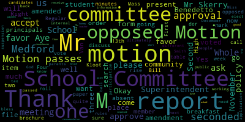

AI-generated transcript of Medford, MA School Committee - Dec. 4, 2017 [Livestream] (Unofficially provided by MT)
English | español | português | 中国人 | kreyol ayisyen | tiếng việt | ខ្មែរ | русский | عربي | 한국인
Back to all transcripts
[SPEAKER_24]: So I would just sort of...
[Skerry]: Hi again, how are we? Christine, what's the average amount that the school lunch program takes in on a daily basis?
[Kreatz]: Yeah, I know, we're a little different. So I have the time?
[Skerry]: Okay, no problem. I was just curious to see what's up. Is it coming out of the $10,000 Jeff gave us, or is that extra? Ok.
[Van der Kloot]: Bob, can I get you to move down just a little? Thank you. A little more. A little more. That's it.
[Skerry]: Are you sure you don't want me out in the parking lot now?
[Van der Kloot]: No, that's good.
[Skerry]: I can go out in the parking lot if you want me to.
[Van der Kloot]: Thank you.
[Skerry]: No problem.
[Van der Kloot]: So Erin is down at the zoning meeting.
[Skerry]: They should have a larger table for us. It's crazy.
[Van der Kloot]: Yeah, I know.
[Skerry]: I think we need longer tables.
[Van der Kloot]: Hi, Sebastian. I guess I didn't read this because I went down to...
[Skerry]: What happened, was it dark?
[Van der Kloot]: No, they're having a zoning meeting there.
[Skerry]: Oh. What are they trying to do?
[Van der Kloot]: Erin is there. There's a concern about Tuft's zoning. I wonder about the other... so me and ... So we did not know, realize that the top here, we didn't catch that. Nope. I meant to ask you because I remember now after the fact. Unfortunately, it's heating through Medford Square right now. It's hard to, oh golly, well it is close to go home. When we're here, it's hard to see across. Well, you can start without them. No, they're on the way. Erin is attending the meeting, but Anne-Marie are coming. Yeah, I'd give them a little bit of time. It was tough to get through Medford Square because of the, you know, all the cones and the police and... It's December, Bob, it's December.
[Skerry]: Who is Eunice Browne? Do you know her? Oh, tell me about her.
[Van der Kloot]: Yeah, so you and I are relics.
[Skerry]: She's gonna find herself in court.
[Van der Kloot]: Yeah, she called us relics. I was so mad.
[Skerry]: She didn't have too many nice things to say about me. She should do her homework before she puts things on the internet. Suing her for a million dollars.
[Van der Kloot]: Good for you.
[Skerry]: Straighten this teacher a lesson.
[Van der Kloot]: I've never heard of her before this election.
[Skerry]: She's not registered to vote.
[Van der Kloot]: Wow, are you serious?
[Skerry]: Yes.
[Van der Kloot]: Why don't we just put that out? She might not be in, for all I know. I don't know if she's an American citizen or not. I just know that she just-
[Skerry]: I don't know the woman. I'd like to know what she looks like.
[Van der Kloot]: I can't tell you. I've never met her. You and I, because we're old, we're automatically, she called us relics, she called us many things.
[Skerry]: She should keep her mouth shut. She's not a taxpayer.
[Van der Kloot]: What?
[Skerry]: I gotta tell you, she doesn't own any property either.
[Van der Kloot]: She just became like all of a sudden that way. That Medford Politics page is just insane.
[Kreatz]: Oh my gosh, what do you do? Do you have.... yes, well that's just... well look at this. And I'm listening a bit and I'm like, it's right here. I'm trying to salvage the note. I'll have to rewrite it. You know what I'll do? There's not much here. I'll turn this, okay? All right. Right here.
[Van der Kloot]: Really, why?
[Skerry]: I'm not hanging around.
[Van der Kloot]: Seriously, Bob?
[Skerry]: Real estate taxes are ridiculous.
[Van der Kloot]: Well, you could downsize easily.
[Skerry]: Where am I going to go?
[Van der Kloot]: And your house is probably worth a lot.
[Skerry]: Yeah, that's why I want to strike while the striking's good.
[Van der Kloot]: Where would you move to?
[Skerry]: Probably Myrtle Beach.
[Van der Kloot]: I have to say, that sounds pretty good, but I don't think you should do it. Well, if you want to go, we've got a lot of committee of the whole minute, so. All right. Do we have a quorum?
[Skerry]: Let's rock and roll.
[Burke]: All right. Regular meeting of Medford School Committee will now come to order. The secretary will call the roll.
[Van der Kloot]: Mrs. Cugno is on her way. Mrs. DiBenedetto is absent. Mrs. Kreatz is here. You're sorry? Yeah. Okay. Ms. Mustone on her way. Mr. Skerry present. Mrs. Van der Kloot present. Mayor Burke present.
[Burke]: Four present, two absent, three absent. All please rise and slip the flag.
[Van der Kloot]: I pledge allegiance to the flag of the United States of America and to the Republic for which it stands, one nation under God, indivisible, with liberty and justice for all.
[Burke]: First item, approval of the minutes from November 20th to November 17th. Motion for approval, Ms. Disceri. Second. Second by Ms. Van der Kloot. All those in favor? Aye. All those opposed? Motion passes.
[Kreatz]: I just have one question. Could we, I just wasn't sure, are we meeting this Wednesday with the McGlynn teachers? No. No, okay. That's what I want to know. Okay, thank you.
[Burke]: second. Yes. Bill's transfer of funds for approval. Motion for approval Mr. scary is there a second.
[Van der Kloot]: Yes I am. Yep.
[Burke]: Roll call vote please.
[Van der Kloot]: Mrs. Cugno is absent. Mrs. DiBenedetto is absent. Mrs. Kreatz? here. Mrs. stone is absent they're all on their way. Mr. Skerry yes.
[Burke]: Please mark Ms. Cugno as present.
[Skerry]: I will.
[Burke]: Approval of payrolls.
[Skerry]: Move approval.
[Burke]: Motion for approval, Mr. Skerry. Seconded by Ms. Krebs.
[Van der Kloot]: Roll call, please. I'm sorry. Yes. Uh missus to benefit is absent. Um there was a scratch. Yes. This must own on our way. Mr. scary. Yes. This is Van der Kloot. Yes. Mayor Burke.
[Burke]: Yes. I did the affirmative to absent motion passes. report of committee, November 13th Committee of the Whole meeting.
[Van der Kloot]: Is it your wish that I should present them? If you wanted to summarize it. Okay, so this was the Committee of the Whole of November 13th. I don't know, do we need to? Can you hear me? Okay. Hold tight. And present at the meeting were Mayor Burke, Vice Chair Anne Marie Cugno, Arenda Benedetto, Kathy Kreatz, Mia Mustone, Robert Scurry, and myself. Also attending was Michael Ruggiero and Paul Rousseau, school committee members left. Also present were the following Deputy Superintendent Beverly Nelson, Assistant Superintendent Diane Caldwell, Director of Pupil Services Kathleen Medaglio, Director of Curriculum Bernadette Scurry. uh, Director of Finance and Administration, Kirsteen Patterson, Director of Foreign Language, Rita DeCarlo, Supervisor of Health Services, Tony Vento, Assistant Athletic Director, Rachel Perry, um, Headmaster, John Perrella, Principal, Paul DeLeva, Principal, Jacob Edwards, Assistant Principal, Nick Tucci, Athletic Trainer, Tanya Cashman, Tim Zitt, Registrar, Curtis Tootin, and other community members, including Tammy Simenotis, uh, Marie Petrides, Angela Moore, David Lu, Melanie McLaughlin, Tanya Sullivan, and Jameel Webb Davis. Transcript recorder Miranda Wilson was also in attendance. Um, the mayor, uh, the, the meeting was called, uh, to discuss school brains, the field trip policy, follow up on student concussions, and report on the North Medford bus. It was a very substantial meeting, went on for hours. Um, I just added that Superintendent Johnson made the following remarks the evenings. Um, and by the way, sorry, it was there was a there was mistake. It should be Bernadette Riccadeli. Uh, so we addressed the four different issues. Um, and the first item was the report of the North Medford bus capacity and ridership, uh, director of administration and finance Christine Patterson gave the report and it's attached. And Principal Tucci verified the report. There are two buses coming from North Medford in the morning and in the afternoon there are between 45 to 50 riders daily which is within its capacity. At this time there's no need to add another bus. administration will keep the committee informed as demand increases. The next item was student concussions. Um, we talked about this at length. Um, as part of our discussions, parent Tammy Simonotis spoke of her son's experience at Beverly High School. She asserted that her son was injured during a JV soccer game and that there was inadequate trainer medical coverage by the Beverly staff. She believes that the Beverly schools did not have a certified trainer at the game. Her son suffered a head injury, chipped teeth and nosebleeds. The concern focused upon safety at away games. Members of our staff spoke with the athletic director at Beverly, but really haven't received any more news. Mrs. Simone was pleased with how Medford handles injuries, but was very upset at the Beverly response. Concern was particularly high because the game was allowed to go on after the injury took place. The superintendent promised that he will be conferring with the MIA regarding this matter. The next item under discussion was the field trip policy and administrators Paul Deliva, Tony Vento and Kathy Medaglio contributed comments during the discussions. CPAC chairperson Melanie McLaughlin raised equity issues about the policy and commented that CPAC should have been consulted as the policy was formulated. There was a discussion about the annual trip to New York by the Andrew School and the questions about deadlines. Among the 90 students who attended, there were 19 students who either had an IEP or 504 plan, and this was 19% of the participants. If we had added another bus, it would have cost approximately $7,500 and would not have made the trip doable. Ms. McLaughlin asserted that the trip excluded students with disabilities and that every trip should be planned to serve all interested students. The issue raised several points. Can field trips be planned with application deadlines if those deadlines are applicable to all students? Should field trips be limited if the economics cannot be balanced? And should the cost of medical services be shared by all participants or subsidized by the school system? After continued discussion, the policy was tabled. Administrators will bring forward a revised policy that addresses the issues. The final issue of the evening was school brains. Headmaster Perella and Data Information Specialist Registrar Curtis Tudin gave us a report. The headmaster reported that changes had been made to address the GPA concerns raised during the spring by Mr. David Lu. Mr. Tudin provided a chart that showed the increase in usage by parents and teachers. More will be done going forward. This is a work in progress, but it is moving forward. Mr. Liu was still skeptical about the accuracy of the reporting system. He revisited his concerns from last spring. Administrators asserted that the changes would work. The school committee asked to be informed as the year progressed. The meeting was adjourned at ten oh five respectfully submitted Paulette Vander Kloot secretary.
[Kreatz]: Very good. Thank you Miss Vander Kloot. Miss Kreatz. Yes, um, Superintendent Belson. I just wanted to follow up with you. Um, I was in touch with Miss Simonides and I just wanted to know if something was filed with the M.I.A.A. regarding the incident. If you've had a chance to file that yet.
[Belson]: Okay, so I have had substantial contact with the Beverly Public Schools. They strongly dispute the account provided to us by Ms. Simonides. I've gone back and forth with Stephen Hershey, who is the superintendent there. He claims, and he gave me the name of the trainer, the certified trainer who was on the field at that time. He said that no trainer from Beverly did anything with the individual. As a result, he feels that it may have been somebody else who just simply helped out on the sidelines. So I have a lot more to do. I did contact the MIAA briefly and told them that we're in the process of continuing to investigate what actually took place. But there is a distinct difference of opinion between what Beverly feels happened and what was reported to us. So there's a little bit going on right now and I'll have more reports soon as I get a better chance to talk to all the parties. The feeling from Beverly was that somebody assisted the student but not necessarily the trainer and that The play was allowed to go forward without any reason to stop the play. So there's back and forth, but Beverly strongly refutes the idea that their trainer assisted our student and also that the trainer was not licensed. And they gave me the name and showed me the licensure.
[Kreatz]: did you communicate that information to the parent?
[Belson]: Not yet. This is still going back. In fact, the latest communication was as late as today. I'm Stephen Hershey. So I've got a lot more work to do. I mean, obviously, there's a real difference of opinion in what took place.
[Kreatz]: So you got the name and the person is not certified? They are.
[Belson]: I actually have it on my phone. I can give it to you afterwards.
[Van der Kloot]: I guess that would raise the question to me is if our kids are playing and a student got hurt, why wasn't our student cared for by the trainer who was there?
[Belson]: According to the Beverly Public Schools, since the referee didn't stop the play, obviously he didn't consider it serious enough and that for some reason, you know, that the assistance was done on the sidelines. They suspect that somebody who maybe had a nursing background or something else like that may have helped on the sidelines. The question is, why did the youngster go back in the game, too, if he had a kick in the head? There are a couple of questions that still have to be answered.
[Van der Kloot]: And if the student, I believe the parent, told us that the student was bleeding, so why would the, I mean, we already talked about why didn't the referee stop the game?
[Belson]: Yeah, well, according to them, they didn't believe the referee needed to stop the game. And secondly, you know, and without casting any aspersions on anyone, as you know, Mississimini's was not at the game. And so as a result, we have a situation where people who were at the game have very different reports as to what took place there. Yes, but certainly blood is blood and if well, that's that's uh, you know an assumption that was made as to when the bleeding took place and who did what and where and I need more information. I mean, obviously we have a back and forth going on and I asked uh, Stephen Hershey who's the again superintendent of Beverly um, because mississippianities was contacting the Beverly school committee and others up in Beverly and uh, They are siding with the Beverly public schools right now. So I you know, I need a lot more Feeling as to what's really took place point of information man The superintendent has the game officials committee been contacted to find out who the referee was and I asked I asked for that information I haven't got it back yet.
[Burke]: Okay Also, have you spoke to the coach?
[Belson]: I didn't speak to the coach, but Mr. Maloney did. And so I'm going to get a follow up on that. But again, today's information, which I just got today, is a direct refutation of the story we got. And so I really need to ask a lot of questions.
[Van der Kloot]: Right. But we do have the student who this happened to. And we could have a follow up with the student.
[Belson]: I just don't know when it happened, how it happened, and the like. I have two very different reports.
[Burke]: Ms. Konyo.
[SPEAKER_25]: When you find out from Beverly, or when you continue discussions with Beverly, could you find out, were they filming the game to see, you know, what type of play happened out there, or was there anyone filming the game to see what type of
[Belson]: I don't know. I don't do a film in the J.V. game and they may have filmed the varsity game but I don't think from the J.V. game.
[SPEAKER_25]: Well sometimes it depends on the schools. You might do it if the kids. It could be someone else that just had their Facebook. Not their Facebook. Their cell phone. And were filming too. Just to see what type of play and if there is something out there that at least we could see what happened. And as my colleague said I mean. You know, especially when you're out there, I know the first thing is, is that when someone goes down and there is blood, especially if there's blood, that's the first thing that the student, the player is asked to step off the field.
[Belson]: Let me let me if I can mirror let me let me read you the latest communication from Stephen Hershey Because I'm putting on my cell phone and they'll give you an idea of you know, the strength of his comment It wasn't like I don't think anything happened. It's very very, you know direct So let me read it to you.
[Burke]: So you're digging while you're getting that up. Mr. Turangali our student representative sure
[Turngali]: Um, a lot of the danger behind concussions is the lack of education that goes with it, um, and especially on the part of the coaches. Um, and if the student does not know to take themselves out of the game, um, um, they'll put themselves at risk for a second damage to the brain, um, which is far worse than the first. Um, so possibly, um, if we're thinking about our own education policy in the future and keeping our own kids safe, I think this is a great example to show that we should push for Medford coaches to be aware of concussions in the game.
[SPEAKER_25]: points of information they are very. Just to address the street alleys. The question of the discussion actually. In my in my came out with a question. Cushion. Policy and a probably about. Six years since Mitchell's been gone so about six years ago. That everyone had to go through it the ironic part is that actually I argued with the referee. to go through it. And I think it's important for them to call themselves their organization because there is a policy out there that everyone has to go through. And that is the coaches have to go through it. Administration has to go through it. The students have to go through it. The parents have to go through it. And at that point in time, and, of course, athletic directors had to go through it. Nurses the only ones at that point in time that didn't have to go through it with the uh... fought long and hard enough it finally came true and the referees have also have to go through it and um... just to give you a quick policy on that when a student has a concussion our athletic trainer actually before the season begins tests all our children and there's a certain way of testing them through the concussion uh... strategies that they have if by any chance a child does get hurt on the field then that child has to go back to that trainer. Gets evaluated. Has to go to a doctor. Will not be placed on that field again, not only with the clearance of a doctor, not only with the clearance of the nurses, but also with the clearance of the trainer. And let me tell you, our trainer, she doesn't care which doctor clears you, you will not get on that field. unless that trainer okays you. And unfortunately, this was a situation that happened prior to that. It happened on the field. It happened away, you know, in experiences of, I'm going to say, on everyone. You know, I understand that the student wanted, the player wanted to get back. And, you know, it's like everything else. player always wants to get back but we as adults have to take responsibility too. I'm not blaming the coach, I'm not blaming our team, I'm not blaming anybody. I'm just saying that there's certain things that we need to make decisions upon and now the superintendent is working with them.
[Belson]: So I don't want to draw any conclusions until I have more investigation, but let me read you what Stephen Hershey wrote me today, and then attach some additional information which I'm exploring with others. Good afternoon. I'm sending you copies of what I have in addition. Your athletic director sent a letter to us. I spoke with several Beverly parents I know usually attend the games. While some of them remember the play, they do not report it as a significant injury. They note that there was no stoppage of play, nor the issuance of a card. Our trainer's name is Charla Berenas, and she has been with us for a long time without complaint. Beverly has taken this seriously from the start, but I have been unable to verify what has been reported. Our coaches and trainer are expected to deal with potential concussions with great caution. We perform ongoing training to ensure we are attending to the safety of all athletes under our own our players from other teams. I would like to find out what happened. Please forward me any information you have. So, we have an ongoing investigation. You know, I can't draw a conclusion, you know, without more discussion with people. This came through today, and we've got a little bit more to follow up, and I just don't want to draw conclusions until I'm comfortable that everyone has a chance to review the information back and forth.
[Burke]: We'll mark it for a report, follow-up report on our agenda?
[Belson]: Yes.
[Burke]: And is there a motion to accept this committee of the whole report from November 13th? Oh, actually amended. I was not present at this meeting.
[Belson]: Okay, second. And you can add me to the chair.
[Burke]: I had you to it.
[Belson]: Yeah, I wasn't. Yeah, I was present. Okay.
[Burke]: Is there a motion for acceptance of the report as amended? So I just seconded by Mr. Skerry. All those in favor? Aye. All those opposed? Motion passes. The Committee of the Whole from November 15th. We do not have that report yet. I'd ask that one of my colleagues table this Committee of the Whole report. So moved by Mr. Benedetto. Seconded by Mr. Skerry. All those in favor?
[SPEAKER_24]: Aye.
[Burke]: All those opposed? That paper is tabled. Committee of the Whole, Minutes from November 27th, 2017. This was a meeting that we held last week in order to discuss the succession plan for our superintendent of schools. We had the Mass. Association of School Committees present. He presented quite a brochure to us on strategies that we should use in our deliberations. Ultimately, the Medford School Committee voted on the following matters in Committee of the Whole. that the MASC, Mass Associated School Committee, will provide a sample brochure to us. The school committee will also explore other search consultants before making a selection. The school committee voted to review internal candidates first. That was a 7-0 vote. And the school committee voted to meet again on December 11, 2017 to continue its work. We also had quite a bit of discussion around a search committee if we ultimately do go outside. What was explained to us is if we do internal candidates, It would be school committee interviewing in a public session. If from there we go to a full search, a nationwide search, let's say, we would form a committee. And the complement of that committee would be set up of three teachers from the different levels of schooling, one administrator, one student, school committee members, suggested was three, and also community members being parents. And we also wanted to make sure that we included all subgroups such as special ed and ELL in those check boxes. So we're working on an actual application. For those out there, we're working on a formal application that people can fill out and submit back to us if they have an interest. Also, I ask that our diversity director be a member of this committee. It was voted on in seven to zero. So thank you all for that. And we will be meeting next week to discuss this further on December 11th. Mr. Superintendent, is that up here? Yes, that is in the high school.
[Belson]: It will be in the conference room.
[Burke]: Is there a motion to accept this report and place it on file to accept the report, please? Motion to accept by Mr. No seconded by Mr. Skerry. All those in favor. All those opposed. Motion passes. Community participation. Miss Retta Smith regarding the school breakfast program. Mia, did you want to say a few words or no? Go read it.
[Belson]: You've been handed a report tonight that was prepared, that was sent to us.
[Burke]: So on our desk is a report on the 2017 breakfast participation rates as well as some literature.
[Smith]: Good evening everyone. So I was asked to present some information on the school breakfast program. So I am a registered dietitian and I am the nutritionist for the food services department for Medford Public Schools. Just some general information, we offer breakfast at all of our schools. Most of them, it's traditional style offered before school begins in the cafeteria. Three of them offer breakfast free of charge for any student interested. One of those three has breakfast not in the cafeteria before school, but in the classroom after the bell, and it counts as learning time. So if you look at the sheet that has the breakfast participation rates, if you look at the last column, the percent ADP, so the percentage of average daily participation, it ranges from 0% to 86 almost percent. So this really shows the drastic variance in participation rates. So the Columbus, the McGlynn Elementary, and Middle School all are offering universally free breakfasts. So if you take a look at just those three using the October 2017 data, the McGlynn Elementary School had almost 29% participation, the Middle School was almost 21, and the Columbus was at about 86. So the Columbus is the school that offers breakfast in the classroom for everyone. So you can see the difference that that really makes in the participation rates. And this is not something that is unique to our district. The EOS Foundation, which is a nonprofit organization that really promotes school breakfast being offered after the bell, they have seen this statewide that schools offering free breakfasts in a traditional setting before the bell experience participation rates far lower than those who offer it in the classroom. Could you explain why the Columbus offers it after the bell versus the others before? So that's a good question. The McGlynn Middle School, this is its first year instituting the universal, so I don't know what the decision was They're the elementary school. From what I'm told a few years ago, I think this was before I started working here, there was a rodent issue. They originally started off doing a breakfast in the class model, and there was a rodent issue that was attributed to the breakfast program, so they stopped.
[Burke]: So Mr. Superintendent, are the principals deciding whether it's before or after the bell?
[Belson]: Pretty much.
[Burke]: Pretty much? Yeah. Can we ask them to all reevaluate?
[SPEAKER_10]: Sure.
[Smith]: Would that be a recommendation you'd make? Yeah, that was my, I just wanted to have you, you know, consider this information and questions of universal breakfast going forward.
[Belson]: There's probably another factor too in terms of busing. You know, the more busing that takes place, the less likely they are to arrive, you know, and take it before the actual school starts.
[Smith]: Oh, right, yes, yeah. That has a big impact in participation as well, yeah.
[DiBenedetto]: Mr. Benedetto? Thank you. Could you tell me what the percentage of the forms returned are for each building? Do you know that? So the free and reduced eligibility? Yeah, whether they sign that they need it or they return the form saying that they're not eligible but they have to sign their form. Does every student sign have a form returned? No. And how do we get like two parents that don't know what this is and it's coming home and they're not knowing to turn them back in and get the quote we need because that would change a lot and do parents know that this also reflects in whether or not they pay for SAT exams as well as college applications. Their free and reduced lunch has bigger implications other than just foods on a daily basis. And I don't think, like up at the high school, you might not get any forms, but if they knew that that was tied in and there was like a campaign to really educate people throughout the community, I think that our numbers could actually be higher than what they're listed here. Right. So that that's concerning to me and I think we have to have like almost 100% return rate for building and like really make it like a campaign or part of re-registration at each year. So that way we we are making sure we capture hungry families as well as giving all those alternative processes. So I would really like to know how many forms were returned per school, like broken down by school, as well as a plan for outreach for next year, so that way we are reaching every family. They either sign off yes or they sign off no. I know it's a big job and a big undertaking, but I think it's well worth it in the community because I don't think people especially non-English families knowing that there are other things that this qualifies them for and it's so important to make sure that they get food.
[Patterson]: Yes, I'd like to comment on that, that we have engaged and made sure that we have the free and reduced applications in multiple languages. They are returned. There is not a requirement for them to be returned. That's not a forced item. However, we are capturing more free and reduced qualifications because they are incorporated within the portal. So we automatically draw those down. So it's not necessary that we receive an actual form back from every household. We are gathering those and getting those counts regardless through the portals that have. That's why we've encouraged additional services and we've had outreach with our parent information center. So we are providing much more detailed information and encouraging families to participate in these other systems that will provide them additional resources and then also automatically qualify them for free or reduced.
[DiBenedetto]: And my point, too, is sometimes there's awards for 100% return rate for classes. They get really getting the word out and being a campaign so that the word goes home and people are excited and learning about it because they don't pay attention to every form. And it's so important to feed our children. And it's so important for kids that say, oh, we don't have money for our college applications. I'm not applying. you know, the tests are covered and the applications are cheaper and like it's so many, many more aspects of this, as well as our district could receive more federal funding because of our percentage rates. That's just a suggestion. I think I made it maybe last year as well.
[Belson]: So let me just make one clarification. This is the breakfast program. This is not the total numbers of students on free and reduced. You know, not everybody comes in early enough for breakfast, especially at the high school and places like that. So we'll give you a report with the total numbers because they're much higher when you look at the school lunch program as opposed to the breakfast program, which is a more, let's say, niche program that not everybody participates in. It's one that, you know, we'd like to increase, but then we've talked to Andrea Silbert over at EOS, you know, many times. But I think that the breakfast program doesn't give you a full, accurate picture. If just at the high school alone, the number of youngsters who are in free and reduced who don't pay a user fee for athletics would tell you that it's much higher than this. Okay? So we'll give you that report.
[DiBenedetto]: Motion to have that report presented to the school committee.
[Belson]: I'm sorry. Second.
[DiBenedetto]: Thank you, Miss Vanderpool.
[Van der Kloot]: I noticed that the Tufts alternative school has a very low participation. And this really surprised me because I would think it would almost be the natural environment where kids would be coming in and might pick up some breakfast at school. Do you have any insight into that number?
[Smith]: Yeah, I was really surprised by that also. So we contacted Mr. to me over there, and he said that because they're allowed to come in so much And they can ask for breakfast, but they don't. But I do think that that's definitely an area of opportunity, especially if you could offer a breakfast that might be an incentive for students to come in.
[Van der Kloot]: And the other thing I noticed is most of the schools we see an increase between September and October. There was only one school where there was a slight decline. Um, and I'm just want to make sure that we keep on looking at these numbers because I wouldn't want there to be any stigma attached to, um, kids going in for breakfast. That's why I think the classroom is right. Environment really is ideal. And, you know, sort of if it works at the Columbus, you know, maybe if we could talk to some of the principals and ask another one to try it for a month and see how it goes, just to see what kind of participation we have then.
[Smith]: Right. I know for the past two years in a row, the Eos Foundation has awarded the Columbus a Healthy Start award, and they give those to schools that see breakfast participation rates. at 80% and higher for so many consecutive months over the course of a year. So I mean, their average is over 80% year long. That's great.
[Burke]: So on the motion by Mr. Benedetto, and also I ask that the superintendent reach out to the various principals to determine if they could do after the bell breakfast. On that motion, all those in favor? Aye. All those opposed? Motion passes. Thank you very much, Ms. Smith.
[Van der Kloot]: I'd like to make a motion to suspend the order of business so that we can take up the report on student survey on substance abuse.
[Burke]: There's a motion for suspension of the rules. Second. Seconded by Ms. Cuno. All those in favor? Aye. All those opposed? Motion passes.
[DiBenedetto]: Mayor Burke, we'll report on student survey before our nutritionist leaves. I saw on some social media that the Columbus School was talking about maybe sour milk at some of the things and asked that they just look into that. I saw on some social media at the McGlen and definitely at the Columbus, I saw some posts about children not taking the milk because they felt the milk was sour.
[Smith]: Yes, yes, we are aware of that and I guess what I can say in response to that is we handle the milks appropriately. We use a first in first out rotation system. So the the oldest milks, you know, are the first ones that are in the coolers and leaving the cooler up. Make them colder. I mean, all of all of the the refrigerators are keeping at temp. So I think this might potentially be a supplier issue. So we'll have to be monitoring. Yeah. But what I can say is from our handling of everything, we're doing everything that we can to ensure that the milks are at a safe temperature and they are within the best by date. So they should be good. But we have to figure out why they're not.
[Burke]: School committee elect, would you like to step up to the mic, please?
[Ruseau]: I had a question about whether the in-class breakfast, how is the milk transported to the classes and how long does it sit in the classes and come back and over and over multiple times a day? How do you track that the milk isn't the same milk going to the class for four or five days in a row? And is it actually kept cold while it's sitting in the class for an hour or two?
[Smith]: Yeah. So this is for the breakfast in the classroom? Yeah. So the breakfast items are transported in coolers. and they are, they leave that morning and go, and I don't know what the exact time frame is, but they're kept in coolers, and so they are used, probably I would say within an hour, and any of the milks that come back are discarded. So that should not be contributing to the issue.
[Burke]: Thank you. Okay, item four, based on suspension of the rules, report on student survey on substance abuse. We have with us Ms. Penny Funny Ali from Medford City Hall Team Medford to do a presentation. Do you need us to move at all?
[SPEAKER_18]: Maybe. Let me just turn on this projector and we shall see.
[Skerry]: It's going on.
[Burke]: It's going on. It's kicking in.
[SPEAKER_18]: Okay, so thank you for having me today. I'm here to present the data, but I do not do my work alone, and Tony Bento and Rachel Perry are here to talk about the work that they do in the schools that really support youth substance use and prevention of youth substance use in the city. I just want to say this is a report on a survey called the Community Care Survey. We've been doing this survey since 2005. It's done every two years, so we have a long amount of years to see trends that have changed throughout the time of the city. Some of the things to note are that what it looks at is it looks at risk and protective factors as well as frequency of reported use. So this is, the youth take this survey, it's an anonymous survey, it comes back to us, we send it to, excuse me, it goes from the school directly to the The researcher who cleans the data. By cleaning the data, what I mean is that they eliminate any surveys that exaggerate drug use or any other antisocial behavior. They eliminate surveys where students report a fictitious drug that's on there, and then anything that's logically inconsistent patterns of drug use, they will eliminate those surveys. So let's say they had 100 that were not, you know, valid, they will eliminate those. That will not be included in the total count for the survey itself. But what it's doing is it's looking at—we don't ask questions about sexuality, but what risk and protective factors do is that really show what drives young people to do things that are risky. So that's why we're looking at this larger picture snapshot. A lot of communities use a youth risk behavior survey and it really looks at the frequency. It doesn't look at some of the community conditions. So it's a large report. We've broken it up for you. Tonight we're going to talk just about substance abuse. rates, and then I will come back, if I'm correct, Superintendent Belson, we discussed that I would come back, talk about risk and protective factors, and then come back again and talk about more data that we saw in the survey. What I'm doing here by showing you this presentation is that I think that we need to remember that this is not a school problem. This is a societal, family, peer-level, individual-level issue. And to solve anything that we want to see change on these numbers, we really need to be working as a whole, as a team, to be able to do this. The school over the years, I've been here since 2008, I began in September of 2008 doing this work, and the schools have had tremendous involvement. The police department has had tremendous involvement in the work that we've done through the Board of Health. And we put out many, many, many instances of putting information out to parents, and we have not had public forums where parents come out in droves, and that's not that we wish they could get the information that we're putting out there. So one of our urges here tonight is to say to parents, please pay attention. We are doing prevention education for you. We have resources for you. We want to be thinking about substance use prevention long before someone uses substances. We're fortunate now in the city of Medford at the Board of Health to have an outreach worker, a recovery coach, who will, you know, between the two of us, we sit and come up with a plan and work with individuals at the police department. We do an early intervention program where if youth are found drinking or using drugs, we will bring them in for a three-hour education course, give them a screening to see if they themselves have any issues, and then we will speak directly to their families about getting them help. Because we're really pushing that, you know, this is about getting help and getting this solved before it becomes a chronic issue for you and your family. So, we have these resources available. We are begging you to come out to our presentations and or access this information online. Many programs for parents are going to be going up on the Mystic Valley Public Health website coming up soon. That will be linked to the City of Medford's website and hopefully to the school's website and to the police's website. But today, if you have an issue, and this is a televised so I'm talking to the public, please go to drugfree.org and look for information there. They can steer you in the right direction. So, the survey itself, we're looking at three different measures of use rates. We have lifetime use, so have you ever tried a substance? Experimentation is something that happens, but use where it becomes a problem or can lead to a problem, we're looking at that at the 30-day prevalence use rate, so whether or not a student has used a substance within the last month, the last 30 days. That's what we measure as current use. And historically, we've always done this survey prior to the February vacation. And this year, I believe in last year as well, the way that the schedule worked out, the survey was done after that time. So that might be something to think about, but I don't see that reflected in the data at this point. Binge drinking behavior is reported if five or more drinks in one sitting in the last two weeks. So that's what we are measuring binge drinking behavior. So the purpose of prevention is to delay use. We want to drive those use numbers back. We want to do our best to get the people who need help, help, and to reduce the amount of people that are trying, experimenting, and using frequently. So what I have here to show you is I have multiple charts that will show you what's happened over time. But this one here I think is really important. So if you look at the youth substance use as a bell curve, you're going to have 5-10% of the students, they're never going to use substances. They may have family history that causes them, they may have, you know, some school commitments or some religious commitments that prevent them from using. And on the other end, you might have 5-10%. percent of students who were going to use no matter what prevention measures were put into place because they have family history, they have trauma, they have other leading factors that could drive them towards something of that nature. So what our goal is is really to drive the numbers back from, you know, we want as many people getting help and more towards that 5 to 10 percent of use as opposed to never using. So in 2005, you can see here 71 percent of high school students 71.2 percent of high school students said that they had used alcohol in their lifetime, ninth through twelfth graders. This is both the high school and the vocational school. In all of this case, those two schools are combined with the data. In 2017, 45.8% of the students said that they had used alcohol in their lifetime. This is a significant change in the rates. And this is as a result of the teamwork that I talked about when I first started speaking. So what we're doing is working, and we need to continue doing it. And we need to continue to bring in more people into the fold and have this conversation. This is 6th grade, and again, when we report out the data, I have both in your packet, lifetime and 30-day use, but current trends are really where you would see that there's sort of an issue that we would want to be addressing in the community. That is where we would put more of our weight in the data. So 6th to 8th grade, as you can see, over time, we've really brought these numbers down. And you can, and these numbers are extremely low. What you're looking at is, and all of you should have a chart provided with the actual percentages. I like to do that because it's hard to read charts sometimes. It would be on page six, maybe page actually five. So for middle school students, You know, 30-day use is 3.4%. That's a lot lower than the national average. For U.S. norm, for 8th grade, it was 7.3%. And I can tell you that our 8th graders were reporting our eighth graders reporting 7.9%. So we do want to be paying attention to that. It's close to the national average. It is a low number, thank goodness, but we should be talking about this. This is why I'm saying we need to talk early and often. We need to be prepared and we need to be ready to have those conversations. We all should be talking to our friends' parents so they know what our personal preferences are and plans when they go to their houses, when they go to parties. They go out to, you know, football games or whatever it is that everyone's well aware. So we do see the numbers declining. We always want to be monitoring the numbers. In the high school, sorry, at the 9th through 12th grade level, we see the decline as well over time, and we're very pleased to see that. One thing that we're monitoring this year that we've never monitored before is vaping. So we don't have numbers to compare to the previous years, but what we can tell you is on page four, What we know right now is that this is what the students reported in February of 2017. Also remember, all 12th grade data, those students do not go to these school systems any longer. They have moved on. So that is something to be thinking about. We believe that this number is going up exponentially as we speak. Based on conversations amongst students and staff, there's a lot more concern for vaping. And we need to be thinking about it overall. So this is what vaping is. This is the most popular vaping product that we're hearing about all over the state, really, right? It's called Juul. And it looks like a USB. You can actually charge it by using it as a USB in your computer or wherever. And one of those is equivalent to one pack of cigarettes. The most popular product is a mango flavor. Call me crazy, but I think they're marketing to a very specific population. They have a very catchy name, and very catchy products, and anything flavored is gonna be really attractive to young people, right? Now, the thing is about this, the other day we were talking about it, and I said, oh, don't worry, this is a patented product, you really, you know, they're not gonna be making marijuana products with this, right? That's not true. You can actually inject marijuana oil into this product once the, stuff is out. So you can get any, go on YouTube and you can learn anything you want to learn about how to hack this. So it's discreet, so you could, somebody could be vaping in here right now and you may not notice. It can be very discreet in that way. So it's something that we really need to be paying attention to. It's very covert. Did you have something you want to say?
[DiBenedetto]: I heard that students are doing it in classrooms because it looks like just a USB and they also like can even exhale right into the hoodies and you don't even see anything. So kids in class are actually, they call it drooling.
[SPEAKER_18]: So the reality is that there's a lot of information and misinformation out there about vaping. The main thing that you need to take away from this is that it contains nicotine and nicotine is one of the most highly addicted drugs in the entire world, right? So, um, you know, there may be speculation that, you know, they're vape, you know, that they're gonna get hooked on vaping and then they're gonna get hooked on cigarettes. I argue that they're probably gonna be hooked on vaping for a very long time is really what the issue's gonna be. Um, and we don't know, because there isn't long-term data to show what the effect of this will be. Just like with cigarettes, we didn't know what cigarettes were gonna do to us, and now look at what we're, where we're at. So, We need to be cautious about that. Now I want to show you this because this is a product that is also a vaping product. They sell these inserts at dispensaries. So if you see something like this, looks like an old timey cigarette holder, that can also be filled with a THC oil of some kind or something, some sort of marijuana derivative product. So marijuana has become legalized in Massachusetts, and it's still dangerous for kids to use marijuana. It can create long-term changes in the way that their brain responds to addictions. It can do a number of different things. What I want to show you in this slide is a very, very busy slide, but I put everything in one slide so that I didn't forget about a single thing. Perception of harm, so great risk of harm, this is how our students said on the survey, that if you tried marijuana, you would be at great risk of harm. There were other things, moderate risk, no risk, but this is specifically looking at the term great risk of harm. So the good news is, is that there are a number of people who do think that you'd be at great risk of harm if you tried marijuana just once. But then in some cases, you know, oddly, that smoking it regularly is somehow okay. Great risk harm is a measure that if you look at, this is what, this is what the data shows nationally, right? That if you believe it's harmful, you will use it less. So what we want to do is make sure that people are well informed of this, of what these drugs and alcohol and everything can do to you. But I feel like these numbers are pretty low. I think that this is going to be an ongoing problem for a long time, and I'm going to tell you why. Because it's very difficult to convey honest facts to young people about marijuana. And we as a community really need to hunker down and think about how to present this information. If we provide false facts of scare tactics to young people, it will not change that number. It'll probably make other things worse because then they'll know for a fact that you were lying to them about marijuana, maybe you're lying about cocaine, maybe you're lying about heroin or other opioids, right? So what we want to do is figure out what is our game plan and to really work on that. I know that there is some education in the curriculum, but I think that we can be doing more and we need to be thinking about this a little bit more, I think that we as a state should have been thinking about this a little bit more all along the way and be prepared because this was going to happen. So the other thing to be very aware of, which is startling to me even, even though I've seen it all, no I haven't really seen it all, but is that driving with someone under the influence of marijuana is pretty high in high school students. So we know one thing for sure that Mothers Against Drunk Driving did a hell of a job of changing drinking and driving rates amongst young people. But we also need to be thinking about this with marijuana as well. It looks to me like almost 30 percent of high school seniors last year had driven in a car with someone under the influence of marijuana. You know, and I think that classically people who smoke marijuana will go for a joy ride, right? They hop in their car. It's sort of a part of the culture. is, you know, getting in your car and getting isolated, getting away from, you know, wherever, especially when you're a teenager because you don't have the freedom to smoke weed in your house or marijuana in your house. So, um, we need to be paying attention to that. We need to be paying very close attention to that, I think. All in all, if you were to, um, take a look at these marijuana rates, we are low in use rates. We're lower than most of the country. So I think that, you know, it's really interesting. Let me just go back real quick. Especially with high school. So marijuana is, um, the gray line. The third line down here starting on the left and then it goes up. 2009-2013, which makes perfect sense because it's decriminalization, medical marijuana becomes legal, right? So the perception of harm has definitely changed at that point, but at what, for some reason from 2013 into 2017 we're still seeing a decline in that use, in that regular use of marijuana. But what typically happens with marijuana use rates is there may be less people who start using marijuana, but the people who use marijuana use it far more chronically. So they may use it more. So that's something to also be thinking about. And then finally, we get to the end of the presentation here, where we're doing a lot of things as a community. I mentioned the youth diversion program. I mentioned all the work that we've done over the years working with the school and the police, working on research, finding evidence-based practices. That's what the city has done. But we also have a grant called Partnerships for Success. That's specifically focusing on prescription drug prevention. Our numbers are very low. If you go back to your charts, and you look at 30-day use rates, and even, well, I would say look at your lifetime rates of prescription drugs, you'll see that in 2005, for high school students, we had 11.4% of students reporting that they used prescription drugs without a doctor's prescription. And you're looking at now, of all students ever having tried, 3.8%. So regardless of the situation that's happening in our community with overdoses, we're seeing youth rates decline with opioid use. I still see, you know, numbers declining with tranquilizers and then also stimulants are sort of leveled off from the previous year. Um, our urge with our grant is to really say we need to be paying attention to all of these prescription drugs. They all, um, cause, you know, can create an effect and cause a problem. Um, opioids are clearly our biggest concern. It's all over the news. And that's a good thing because people are talking about it to their kids. They're talking about, what's going on with other family members maybe, um, my aunt lives in Indiana, she had crazy surgery and they were all over her prescription pain meds, so I was very pleased to hear that, not just in Massachusetts but other parts of the country. Doctors are paying attention to those pain medications. Um, but one thing is I went to Tufts last week and I did a training on, um, how to use naloxone with Armstrong Ambulance, and I stated that cocaine is being cut with fentanyl on the street. And I had a kid look up at me like, oh. So I have, and I'm not saying that kid uses cocaine. My point though being that people are unaware of this, and it's very important to know that we have to pay attention to all drug use. It should not be about this drug is bad, this one isn't as bad. All drugs are bad because, and alcohol too, because it creates addiction and pathways to addiction then lead to further addiction problems. So this is something that we just want to be aware of. So anyhow, the Partnerships for Success grant, we have multiple projects that we're working with the school on. One thing is a health and safety guide went out to all families from, I believe, 8th grade to 11th grade at the end of last year. And it was a 24-page guide, multiple, multiple things to think about, where to dispose of drugs, what is vaping, you know, understanding stress in your students, prescription drugs. It was a very well-organized litany of resources as well as information. That's one way that we're trying to get information out to parents is direct mailing. Another thing that we're doing that I think is really important is that we've helped through working with Rachel We've implemented a module on prescription drugs into the 10th grade curriculum for the Michigan model. And then we have a risk to resiliency professional development series where we're talking about trauma-informed care. We're talking about absenteeism. And really what we're trying to communicate is that we want to build these kids up. If we just say that you're going to do drugs, you're going to do drugs, they might do drugs if you've told them that's who they are. We're trying to really do the opposite of that and try to identify those sparks, those things that make individuals who they are and things that they can find sense of purpose. Not our sense of purpose on these kids, but what is their sense of purpose so that they can have that. driven internal, you know, guiding thing that keeps them in that 5 to 10% away from substances. So we're working with faculty to get them that information. So through the lens of asset building, the lens of looking at kids as though they have positive things to bring to this world, but understanding those risk factors. And then finally, we're working with two identified faculty members. One's a coach and one's also one's a academic. after school club advisor. And we're working with them to do training to all of the school clubs and advisors. Because in the city of Medford, that's where kids go after school in the high school. They go to the clubs. They go to sports. So we're doing a integrated training with them around developmental relationships. Just what I was saying, how do you identify those sparks in that kid? You have these high, high achievers who are overstressed out. And you have people who don't participate because the high, high achievers might be taken over. So we're trying to talk about how do you balance that, how you facilitate your clubs. How do you operate as a club advisor as opposed to a teacher in a classroom? So those are our main programs that we're doing at the city. And then I'm going to step back and let Rachel and Tony talk about the projects that they've done in the school. And then I'll answer questions.
[Perry]: Thank you, Penny. Thank you. Good evening. I wanted to talk a little bit about vaping. Penny had talked about our numbers going down, but we have noticed we're seeing more and more of it here at the high school. So we have addressed it. One thing we have done is on November 21st, there was a meeting, a staff meeting that Nick Tucci actually presented information on vaping to our teachers, to our staff, presented what to look for, what the dangers are, and what they can do if they see a student actually vaping in class, what the steps are from there. Tony has actually done some information out on our blog. out to parents. So that was out, I believe, was that October? That was in October. What we're working on right now is another message that goes out to all parents that will be going out in December. Mr. Dempsey and Lisa Dunphy are also working on a video that students will be making and that will actually be presented as a homeroom activity in January. So that will go out to all the students at the high school. We have set up a presentation for February 8th for all parents, where it will be a vaping presentation along with In Plain Sight, which will be here again at the high school. We had that at Seahall last year, but we thought it would be something that in light of everything that we could bring back. And as part of our Michigan model curriculum, we've added vaping to any lesson that included tobacco. So this is in the second year at the high school and the first year at the middle schools. I did reach out to the principals at the middle schools and they really haven't seen much going on with vaping there, but we have seen the uptick here at the high school.
[Burke]: They know what to look for in the middle schools?
[Perry]: The teachers and? That's something that we can actually present. That would be the next step to bring it down to the middle school.
[SPEAKER_17]: Thank you. Good evening. I think some of the health services department activities we've talked about in the past, first being the SBIRT screening that we do in grade 9. This year we're extending that to grade 7. We're in the process of finishing all the training for the middle school staff so that we can start that after the turn of the year. and our high school screening will start in January. The other project the School Health Advisory Council has been involved in is we're reaching out to the community physicians, so we've met with the chief of pediatrics at Winchester Hospital, and we're looking to get onto the agenda for one of their Grand Rounds meetings, and we're going to be discussing ways that We as school support staff can work and collaborate with the community physicians. So we have better communication and we're, we each understand each other's models and we can be working on the same agendas. So we're very pleased to be reaching out into the community for that. I think everything else has been mentioned. But our real goal is to get out education to parents and to faculty. on this year about all these changes.
[SPEAKER_25]: First of all, I just want to say thank you to all of you and everyone who's involved in this. The educational piece in this is extremely important and the work that you've done has been extremely important. So I want to say thank you for that. But I do have some questions and as far as the survey, Penny, when the survey goes out, Are there questions on the survey asking, like, when do they do this? Is it weekends? Is it, you know, after school, before school, during school? Why are they doing it? Are they doing it just as an experimental one-time thing? Are they doing it because they're bored? They're doing it because there's peer pressure? You know, different questions like that. Is there anything like that in the survey?
[SPEAKER_18]: No, there's no questions like that. But there are questions about where they get their alcohol, or their, I believe it's just alcohol.
[SPEAKER_25]: But I do think it is important, but not that I'm saying that no matter when anyone uses anything like this, it's always important. But I think if we could at least get a base on, well, gee, it's happening more on the weekends. It's happening after school. It's happening, you know, for our students that are busy. Like, are they doing it more when it's not their season? You know, are they doing it when it's not their hockey season or their soccer season or their football season? Or is it, you know, for our drama students, and I'm not picking on clubs, I'm just saying as examples, you know, is it students that are always involved with a particular project that they're in or a team that they're on or a debate after school that kind of makes them think twice because they definitely know the repercussions of that. For us, Paul, I think it would be very important to know, because if we could stop pinpointing where these, you know, stats go, okay, it's lower at this time, it's higher at this time. Is it around, you know, is it around final exams? Is it around MCAS? Is it around the parks? You know, there's so many variables, and I think that We you have done this survey now for the last few years. I mean, as a school committee member and as a parent, I think I would like to see it a little bit more expand. I know it's a lot more work, but to expand it to really see the pinpoint of where these students, you know, and why they're doing it. Sometimes there's no answers to those questions, and I totally understand that. The other thing I was going to ask you, too, is you had mentioned about, and I apologize if I used the wrong terminology, but like the interventions, if you find that there's like a group of students that are having a party. And then you bring them in for a three-hour workshop. Have we found those numbers to go up?
[SPEAKER_18]: No, those numbers are very low, actually. Our police officer, we've been doing this project since 2012, and it's been rolled out for about three years now. The numbers are very low. We just are not seeing very many kids in the park, not by we, I'm not a patrol officer, but the patrol officer is not seeing people out in the park very often. We've sent out youth cars specifically for that on high incident times and they're just not having as many of those calls coming in as they did in the years past. So I think that it's very interesting. So what I would say to you is this about those questions. I just want to answer that. This survey is a national survey, and the questions that are on there are vetted through research. So to add more questions on, this is already 200 questions for the students to sit and get through, which is far more extensive than the YRBS that others ask. So we're already asking a lot from these kids. But the other thing is that we can get some of that information just through a different method. We could use focus groups, key informant interviews. We would just need to find a way to get like a third party to come in, you know, and to do that and to set those up. So, for instance, I'm calling out to all the parents. If parents know that, you know, they want to know this information, they're willing to sign a permission slip, we have already have the means to start asking questions like this and getting qualitative data for us to find more out about when and where and how this is happening in the city.
[SPEAKER_25]: I just think it's really important. I mean, I understand the national one because you do want to compare us to everyone else. The bottom line is also we want to make sure of what's happening in our own backyard. And I think that, you know, again, it's not forcing anyone to, you know, to answer these questions, but I think it's really important to know when and certain things are happening. And as far as to go back to, you know, kids hanging around the park, kids haven't been hanging around the park in a very long time. That doesn't really happen as much anymore. Years ago, parents allowed kids to hang around the park. Nowadays, they don't. But that doesn't mean that just because they're not things aren't happening. And I don't want to put blinders on and say that everybody's perfect and nothing's happening, but unfortunately we have seen, and I'm not saying it in the city of Medford, and I'm not saying it doesn't happen in the city of Medford, but unfortunately we have seen situations from you know it hits the media or whatever that well you know g parents think well my kids are gonna go out and drink anyway so why don't we all have them downstairs in the basement or g you know they're gonna be doing that anyway so why don't we have them you know here so just because they're not in a so-called park I still think that we have to have our ears and eyes open, and that's why I was saying, you know, if our administration, if our teachers hear anything about this big party going on or anything like that, you know, hey, you know, if the police officers happen to be around that area at that time, And it's not a get you, I have to get you type of thing. It's really to be more preventative before anything happens. That's all it is. And as far as the vaporing and the marijuana, I mean, My opinion is because now the legalization of it all, and I think that, you know, students and anyone who had the mentality before saying, oh, gee, it was marijuana that didn't want to touch it, now like, oh, it's marijuana because, like, we can't have it. And I've seen it. I've seen it this summer especially. I've seen it like, you know, people just, you know, smoking it, going down the street, and you have young children with you, and now young children are smelling it, and you're smelling it. And here we were years ago saying, you know, well, gee, do you know what, you know, secondhand smoking does? Now we have to explain to our kids, you know, well, gee, secondhand marijuana, inhaling it. You know, and it's a very, very concerning situation. I know that as a school system, we've been lucky enough to say, yes, we can ban it because we ban cigarettes. You're not allowed to do that. I just don't know if that number now is rising because students, you know, it's a new thing, you know, and I don't know if it's the mentality of it all and we could do it. It's not a big deal. It's not as bad as the cigarettes because we don't have anything out there yet to prove that. So I don't know if those numbers are going up because of it.
[SPEAKER_18]: Yeah, I mean, I have a very extensive conversation with one of the classes here a couple months ago about vaping, about marijuana, and, you know, they were really practical. They want to know where the research is. They want to see the data. This is a good thing in many ways, because these are well-educated young people who are researching information on their own. On the same hand, you know, so they want to see it. And unfortunately, it's not there. It's not provided. So we're kind of, you know, but we had, I pushed them. I pushed them far and hard to think about this in a broader context. And we had a really rich discussion. And, you know, I think that there's tons of opportunity for us to have youth-led, initiatives that talk about vaping, that talk about marijuana use. I think that we can definitely be looking at that in the future. These are really brilliant kids in the school. So I'd be very interested to start doing that.
[SPEAKER_25]: Just two more questions real quick. One is to both Tony and Rachel. You were saying that you're speaking to our teachers more and more now about the vaping to be more aware of it, to be more cautious of it. And they know what the next steps are. But what do the students know? What are their next steps? If they're caught with it, what happens?
[SPEAKER_17]: The administration would follow the discipline codes that are in the handbook. So it's similar to using, God bless you, tobacco products. So they would follow those discipline codes.
[SPEAKER_25]: And I guess, Penny, the other thing is for you is I know that you've done a lot of outreach, but is there still any one-to-one on with the schools? Like when they have parent-teacher nights or if they're doing a special thing in their schools, is there anything going on that you have a table set up? Because I know it's difficult sometimes to get parents out because everyone is busy, but sometimes if they're there and it's I don't want to overtake another meeting, but I'm just saying that if you know that you're going to get a good crowd out there because of that meeting, is there something set up that night with your information, with someone out there to talk or maybe even have a five-minute, you know, discussion with the audience?
[SPEAKER_18]: So over the years, there's been, you know, a myriad of ways that I've been included in these types of events. I've had opportunities to speak before. The parent teacher night presentation begins at that table there. The best part about the City of Medford and the work that we've done here is that this community really takes on the work themselves. And so when high quality information is being put out, I don't need to be there. just to be a steward over it, it's being done. So all the stuff that happens for when DA Ryan comes and talks about social host liability, that's a tremendous program and that's happening on a regular yearly basis. So those are the kinds of things that we really, really shows how much effort is being put in by the school system. Last year we had Dr. Ruth Cody come and do a presentation as a partnership and there were 75 people there but the majority were faculty and other people that work in school systems throughout the region. So again you know the first time we ever had a presentation here it was Be a parent, not a pal, social host liability, just like the DAs. There were three people that showed up. And there was 2,400 mail outs that went out advertising this program. So it's just like, it's nice to see when people do come and we get to talk to them and they see that, you know, we're not, but really what happens is when we do a community table, I want to be completely honest with you. This is very scary to people to talk about substance abuse when you're talking about, you know, a 7th grade kid or even a 7 year old or even a high school kid who you've never seen have an issue with it. They do not want to talk to it. That's why we're called Team Medford, not the Substance Abuse People, because people just don't want to talk about it. So it's very rare that you get a good, you know, showing out at your table at the community tabling events, but it is worth it. We do often have a really good conversation with at least one person. So yes, I mean, we go to as many as we can and we'll continue to do that. But I'd like to see where it's actually an institutionalized conversation. It's not just like, oh, the substance abuse people are coming and walking in and they're going to tell you some information. It's nice when we're coming and we're asked to be experts, but it's really a part of the growth of an individual to be talking about this. So I think that it should be sort of embedded in everything.
[SPEAKER_25]: I know having you come in just by yourselves, even though you have a great program, it's just as you mentioned, it's scary sometimes, and people don't want to hear it sometimes. So this way here, instead of having it directly, that's why I was saying if there was some collaboration. And I know that you've had it. Yeah, and I know that they've had it. I just, for people that are watching that don't know about it, you know, and maybe they don't feel comfortable calling you, but they might feel comfortable calling a principal or a teacher or, you know, or a child listening, you know, happens to listen to this and asks another, you know, another student, at least they know that, gee, They don't have to necessarily call you directly. They can go to someone because they know that you're all working together.
[SPEAKER_18]: Absolutely. That's absolutely true. And one of the biggest things for their buck in the college setting is how to help a friend. And we worked with a student last year to put up posters that were about how to help a friend. And so they're advertised to the kids. about how do you get resources for your friends, and they're up, but again, do they see them? Unless we paid a million dollars to have a Snapchat story commercial, I don't know if anyone's ever going to see it, let's be honest. Mr. Benedetto.
[DiBenedetto]: Do we have a vaping policy on the books or are we using the tobacco policy?
[Belson]: So we're using the tobacco policy because vaping is sort of a derivative and you know but as we move forward we'll obviously specify a little bit more completely.
[DiBenedetto]: Well with the growth I see throughout not just our community but socially and adults as well as high school age students I would like for this committee to start working on that so that way it's in our handbooks as vaping as jeweling, as the correct terminology, so students are very clear how we as adults feel in this community about this, because students just do not believe, they think that, oh, I quit smoking, I'm only vaping now, and that's what you hear, and they don't realize when it gets in their lungs, it's like popcorn, and it blows up their lungs, and it does all these health implications, and there's not a lot of data because they haven't been doing it for years, but having, Two people in my house who read this report before I got here, almost 27 and almost 25. One's a future NP and one works in another community on these exact programs. They were happy to see our numbers. that we're doing a great job in MedFed. We want to be clear, call it what it is, name it, say it's not okay, and tell them that from day one, so that way the wording is correct. Because once you name something, it's not like this secret thing anymore. It's not as fun. So that's a motion on on the floor and I need a second second my colleagues. I'd like to see this in place and in every handbook at every at our junior high and high school level by next year. So that parents know that this is happening in our community and that we're taking it seriously and we're not going to we're not going to continue.
[Van der Kloot]: Thank you very much. Mr. Van der Kloot. Honey last spring I was able to attend and I don't remember the title of it but the night of remembrance. for those who had died of opiate deaths, related deaths. And one of the things, and it was a very powerful presentation, but there were two speakers that particularly impacted me. They were both students who had previously attended Medford High. And one of the things that they said was, they both said they actually were pretty good kids here. you know, were popular, they were, you know, kids who were not involved, particularly with drugs or alcohol at that time. And one of my biggest concerns is, I think we're doing good work laying a positive foundation here but I'm totally worried about that transition off topology and um I'm not sure I'm you just mentioned some posters how to help a friend and you know we see these uh incredible stories of you know the frat brothers who you know are drinking too much and then let their frat brother die um you know and that's that's where I'm wondering our last We're touching the kids at 10th grade. I don't know whether we're discussing at that point, hey, when you get to college, these are things to expect, you know. I'm just concerned about that transition to college and loneliness, too. For some kids, when they go off, we put so much, hey, we're going to college, and then all of a sudden they get there, and it's kind of a little lonely sometimes.
[Perry]: So we do touch upon that in 10th grade. Last year we actually had Armstrong Ambulance come in and they did a training for all of our seniors going off to college. They talked about, you know, drugs, drug use, overdoses. They learned how to do CPR, first aid. So that was actually something that we started last year to help those students transitioning from senior year into college.
[Van der Kloot]: Um, also, I just wondered that those two speakers who were there that night, um, have they come and spoken? I know that they both expressed willingness to me or to others, uh, to come and talk directly to students. And I've wondered if, um, I haven't gotten anything. I'm sure you have the names and they certainly expressed their willingness to me. And I think that we might, um, it might be valuable.
[SPEAKER_18]: I apologize for not including the, um, naloxone training to seniors and also to our vocational students. We do a lot of stuff. That's a big one though because it does start to talk about this missing population, 18 to 28 year olds I would say. You know one of the things that we're doing that's Really a big cornerstone in our offices. We're doing a lot of work working with trying to address overdose rates in the trades and so we've worked with Heidi had last year did a great job of getting us in and we had that and that conversation. So we talked about, you know, dangers on the job. We met with all the vocational students that were in co-op and we talked about, you know, injuries on the job, what to do if there's an injury from a tourniquet to how to use naloxone. And we had a really great conversation, super bright nursing, you know, CNA students and Just really really good conversations there. So that's one way that we should be thinking about and continuing to partner about you know working with those employers who are Taking on our students and what are they're doing? What are their practices? We've created a toolkit for workers on a how to understand the laws that pertain to them as well as to their employees. So we've done a lot of work around that. That gets at the population that's not going off to college. But I think that one thing that Danielle from Armstrong Ambulance would say is that the majority of the students were staying in Massachusetts. And so it's really about all of us thinking, all of our school systems thinking as a whole about how to teach kids the same information across the board. So when they do go to school, they're still taking care of each other and helping each other out.
[DiBenedetto]: Mr. Benedetto. So when you're doing that training this year for CPI or first aid, can we add back in training that's already in it?
[SPEAKER_17]: It's already there.
[DiBenedetto]: And is that for both the high school and the vocational seniors? So so that's great. I think that's wonderful. And I think Mr. Turgali.
[Turngali]: Yeah, I think that the so in in the school, I think that the reason that as you stated many times, the reason that people do dueling so much is just because they think it's not bad and also that it seems clean and they don't think that it's hurtful. One thing that I think would be really effective, similar to the 74% of Medford students are marijuana free. I thought that was really effective just having the facts up there. So I think like something that could be really effective in the school you know, like maybe picking three or four facts, um, from, you know, like one Juul pod contains as much nicotine as a pack of cigarettes, um, you'd be surprised how many people, uh, pay attention to that, and especially, as you mentioned, um, that, you know, the, the facts are not out there, and people would be really, um, You know, it would change the perception of the problem at hand before it really takes root over time. So, yeah.
[SPEAKER_18]: That's called social norming, and you just identified as scientific. You know, research, study, evidence-based, but it works. And we have done posters in the past that we believe could have driven those numbers continually down, talking about how many students actually don't use marijuana. It's interesting when you are someone who's using substances, your peer group's probably using substances. That's the whole entire world is using substances. So that's something to be thinking about. It's really important to get the facts out there and to really show that there's a lot of kids who just don't do this stuff, a lot of students.
[O'Brien]: can you yield to Miss O'Brien?
[SPEAKER_18]: Yes.
[O'Brien]: Miss O'Brien. So back when I was in high school, I was part of the Above the Influence Club for a while with Miss Perry as my advisor. And we had Chris Heron come and speak to all the athletes in high school. It was mandatory. You couldn't even play the spring sport unless you went and saw Chris Heron. And I think that was such a positive thing for us as high schoolers to see someone who's young and who overcame something and made something of his life, who was rich at one point and then totally went somewhere else. And I feel like that would be so beneficial to have a motivational speaker come in, not even just the athletes, but to everyone in the school should have the opportunity to come see someone. Because it's not just the athletes that fall out of track, you know? It's everyone. And I think a motivational speaker would be totally helpful. Because Chris Herron, I know, like my friends, when we left, we were like, oh my gosh, like wow. I know Mary Burke's daughter was on the lacrosse team with me and she, it was just amazing. It was an amazing experience and I think the children would really benefit from that and I think we should not even open it to just the high school, it should be the middle school too. Absolutely. And me being a young teacher and wanting to teach in Medford, I think we have such a strong community and we're so tight bonded and I'm so tight bonded with everyone in the community. I feel like I can talk to anyone here and I want to be able to I don't know how to put it, but have people be able to come and talk to the teachers and be comfortable with everyone. And I think a motivational speaker coming in would be just a great aspect. I don't know how Ms. Carey got Chris Hirons. Maybe she could come about that again, but I know he does motivational speaking all the time. I follow him on Twitter. I think he's amazing. And yeah. Great recommendation, Hannah.
[Burke]: Mr. Carey.
[Skerry]: May I throw you to Sebastian, this is your next great story, your next great lead in the Mustang News. It's their posters, you know, get it in print and shoot for our Pulitzer.
[Van der Kloot]: I think that one in our report that one stat about one jewel can have whatever it was contains as much nicotine as a pack of cigarettes. It's just so striking that it is time for us. We have a graphics arts department. We can get some posters made up. I think that that would be incredibly valuable to right away get out.
[SPEAKER_18]: I think you should also know that one of those pods is like $4, like four or five bucks. So a lot cheaper than a pack.
[Burke]: No taxes, or is it a tax on that stuff? No, it's online. I don't know if it's taxed. It's sales tax. So our community, the Board of Health passed that you cannot sell to minors. Right. God bless you. God bless you.
[Skerry]: I think that's a good point. And just one last point for Sebastian.
[Burke]: There was information.
[Skerry]: There was a great article a couple of weeks ago on the globe regarding dueling and its effects and what they know so far, so you might want to research that. Come up with your own conclusions and get a story out there for us. That's good.
[Van der Kloot]: Thank you. Miss Van der Kloot. Yes. No, I just wondered if we can also I don't know whether I should make it as a form of a motion, but maybe we could
[Burke]: Motion on the fly second. On the motions that have been offered thus far, all those in favor?
[SPEAKER_24]: Aye.
[Burke]: All those opposed? Motion passes, including a motivational speaker. Mr. Ruggiero, school committee man-elect.
[SPEAKER_14]: I have two questions. The first is so the alcohol use from the 6th to 8th grade dropped pretty precipitously from 2011 to 2013 and I was wondering what accounts for that drop. And the second thing I had is maybe just helping us understand the analytics. So you have children completing a survey Do we have any sense of how many people are actually users but are concerned that if they fill out this survey and profit with this information will be seen by a teacher that they're handing it in? Do we have like a sense of like heroin use? I know overdose is a serious issue in Medford. So do we have a sense of underage heroin overdoses in Medford?
[SPEAKER_18]: There are no underage heroin overdoses in Medford. There was an individual who's 19 that overdosed and died in Medford, they were from another community. So that's something to know. So I have it here at the bottom. But these numbers are so small that it's very, you have to really think about that, that this is like .1% of the entire population that took it reported. That could be one student. So there's something to think about when you're looking at that data. So it's there. But your question is about,
[SPEAKER_14]: Oh, what was the drop? The drop was pretty significant. If you have 10%, that's a significant selection.
[SPEAKER_18]: It is a significant drop. And what we saw at that time was we saw an increase in parental monitoring. If you were to look at the risk and protective factors, we talked about in 2011, there were some protective factors that were very low in the middle schools. And by the next year, they were exactly even with their sister scores. So the deal was is that there were many opportunities for rewards if you do something in the school, but there weren't very many opportunities. So when those two came together and they were even that we talked about at the school committee meeting, we talked about it with the principals, there was a whole influx of new activities after school activities that started to happen. Those numbers became aligned and we saw that number drop. So parents were monitoring their kids. more closely, the schools addressed some of the pro-social things that needed to be addressed in the community. It was a real sort of like chasm of everybody working together, I think, and that really helped drive those numbers down.
[SPEAKER_14]: And do you have a sense of how many kids are using but don't report on the survey?
[SPEAKER_18]: So that's just sort of a given with these surveys, right? To be honest with you, a lot of people who are using substances know very well that they don't want to be using substances, and so they do self-report pretty accurately on these surveys. They may not want to be forthcoming with someone that knows them and may feel shame if they were to report, but when it's anonymous, it's secretive. They actually do fill them out pretty accurately, at least that's what nationally, that's what the story has been. I don't have the exact scientific fact for you, but that's what I do know.
[Burke]: very good. Is there a motion to receive this report?
[SPEAKER_25]: One more question. Ms. Cuno. Actually, I was just thinking of the bullet points that we were talking about, whether it be Sebastian or both of you, is the other one about getting into our vehicle. Yes. With someone who's been vaping. Yeah. Which is very important and it's very serious. And I think that would be a bullet point really to put out there because I don't think People are aware of how serious that could be. Because we're, you know, we've been trained in our mind, and as kids we've been trained in our minds too, is, you know, you don't get into a vehicle with someone who's been drinking. Right. No one's been talking about this. This is, you know, newer. So I think that's definitely a point we need to put out there.
[SPEAKER_18]: Yeah. I think it's a really important one to talk about for sure.
[Burke]: Very good on the motion this report being received and placed on file all those in favor. Aye. All those opposed. Thank you so much.
[SPEAKER_24]: Thank you very much.
[Burke]: Okay, motion to revert to the regular order of business. All those in favor? Aye. All those opposed? Motion passes. Report one, recommendation to approve Meffitt High School, Meffitt-Vogue Tech High School graduation date and location.
[Belson]: Move approval.
[Burke]: Motion to approve. Superintendent, well, you want me just to announce the date?
[Belson]: Well, we can just make one quick comment, as we've done this at this place every year for a long time now, and the reason we need to approve it so early is that if we have snow days, you know, we've locked in the date. So we don't have to have, you know, so many days. But if there are no snow days, we don't have to worry about it. And the other thing, the other thing that I just want to let you know is that Mr. William Cummings of the Cummings Foundation will speak at graduation in addition to the normal speakers.
[Burke]: That's exciting. Excellent. So June 6, all those parents out there, at 6 p.m. at the Gancher Center at Tufts University. Motion to approve Mr. Benedetto, seconded by Ms. Kreatz. All those in favor? Aye. All those opposed? Motion passes. Financial report. Ms. Patterson.
[Patterson]: So this is our first quarterly or close to one third of the year report on our financials. The general fund operating budget for FY18 is $56,431,000, of which year to date we have spent 42%, 42.9%, which is a total of $24,215,786. And that includes both our expenditures and our encumbrances, which is reserving funds for anticipated and projected expenses. So of the amount spent to date, our 10-month biweekly employees have received nine of their checks since August 28th, with an additional special run in October to accommodate the anticipated number of checks per calendar year. And all 12-month employees have received 11 of their paychecks since July 1, the first start of the new fiscal year. So we have many staff members out on maternity leave with some additional expected in the spring. Currently we have nine. So there are some significant coverages that we're maintaining that is also long term sub capacities. And while there has been significant transition for teaching and other staff members during this school year, we have been able to fill the positions based on the program needs and will continue to do so as those arise. The business office is fully staffed. We transitioned from some various leaves and had significant turnover over the summer. So we are in the process of reclassifying our payroll codes to reflect correct budget items and be in line with where they were reflected for the departmental charges. We are also excited and encouraged to be rolling out and implementing a new automated onboarding process that's for the hiring and tracking that will greatly improve our laborious process for new hires and streamlining documentation. This will also be rolled out to current employees for data changes and updates, and it is a subsequent system for the current attendance ASOP system that we use with Frontline, and it will also include a mobile app, so that will greatly improve utilization. So as we continue to respond to the DESE, Department of Ed chart of account change structures, as well as additional reporting components that they have for us, we have to report and track expenses by a number of different areas, which include by school, by function code, by category, district wide, and expanding out to individual grants, the higher level grants, such as Title I and special education. So within the operating budget where some budget columns may be zero, the planned cost projections are included in those breakout items and the balances within each function remain to be positive. So we please also note that the encumbrance column, it does include amounts that we have included our best projections for year end expenditures. So those will continue to be monitored, liquidated and updated as costs are trued up as the invoices come in and actual payments are relieved. So included with the summary are some of the key program areas within our general fund. The first of which is the largest component of our budget is salaries. In fiscal year 2018, we have two salary increments that were awarded for the collective bargaining units. The first was in July and or the start of their contract. And the second increase will be in January for the appropriate CBA groups. And that will be another 1%. So the undistributed allocation will be dispersed among the budget adjustments for different program areas. So as we identify the increases in certain areas, we'll be reallocating some of those amounts for personnel changes, retirement buybacks and the such. Another area of interest is security. Large investments have been made to replace and repair the security cameras throughout the district at all buildings. So the amount of $194,949 within the budget is earmarked for the security program reporting area. However, it will most likely be shifted to a capital account once appropriated. We expect that the projects will be completed at all schools by mid-December, and we will follow up with a detailed report. There have been many schools that have finalized the completion of those repairs, and we will be updating as they And then we'll be able to finalize as well. So security in the buildings is a priority, and the district continues to demonstrate its commitment to ensuring safety in the multiple areas, and that includes our staffing, training our staff members, cameras, security cameras. And identification stops at entrance locations, which include the Raptor license scanning and name tag system. Our technology is another significant area committee decided to infuse the system with significant funding at each of the school systems at each school building. There was 15,000 earmarked for the high school level, 5,000 for Curtis Tufts, 15,000 for the middle schools, and 13,000 for each elementary school, which was significant. We utilized those funds and used some high volume discounts along with state bid pricing to maximize the investment within those technology area and rolled out over the summer to have the carts and units available for the start of school. So in total we had 455 devices, new devices for this school year that were rolled out for use in each of the buildings. And additionally, within technology, we just received the E-rate approval that will further improve connectivity district-wide. And we're hoping the matching dollars that were requested from the city will be approved and we'll be able to continue the technology investment throughout school year 2018. Transportation continues to be a large item. We are currently in year three of the original three-year contract with Eastern Bus, and we have an additional two years locked in at specified rates for that contract. The budget reflects an anticipated reduction of one bus. However, we did have to bring bus number 18 back into the cycle due to the shift in newcomers programs, and so we've had to utilize the additional bus for that. So it shows a negative amount within that category based on the need for additional transportation. We also have absorbed the cost for students that attend the Minuteman Vocational School. And the amount we expect will be covered by the reduced enrollment in the tuition. So where we had projected additional students going out and the offset coming in for the transportation will net itself out. We currently provide after school buses to the middle schools, and that's per contract that was identified in the original contract. Three buses per day, and that's for 70 days throughout the school year. We've also indicated that should the elementary schools be considering additional after school programs, there would be some additional costs realized with that, and we would need to work with the provider for the levels of trips and participation and timing of those trips because the routes are all intertwined and combined. So there may be possibility for an additional contractor at that point if it was decided and determined to go forward with that additional expense in the transportation area. are utilities, which covers natural gas, electricity, water. We encumber the utilities based on historical years of usage, and we budget conservatively for unexpected occurrences. So our natural gas rates have been very favorable. Utilization has been lower due to milder winters. However, we still have not experienced the cold months for this fiscal year, so we're not quite sure how that will land. Electricity continues to be volatile in the marketplace, and we will be expecting a slightly higher rate beginning next fiscal year, which we have locked in with City Hall working with the Power Options Company. So our current rate is slightly lower, which is for the supply cost at 0.0882 per kilowatt hour. Moving into next fiscal year, we'll have 0.0931. So definitely moving forward as we budget and plan for that, we will need to budget some increases in that area. But we have encumbered the entire line item for that account. It has typically gone to the very end of that particular expense. So we want to maintain a conservative estimate and show that fully expended. So in summary, the first financial report shows that the expenditures are in line with our budget projections. We will continue to monitor and review them. And we constantly look at consolidating purchases, utilizing state bids when we can. and the like and identifying savings wherever possible. And I'd like to again thank City Hall, my counterparts at the hall that communication, cooperation has been very effective in helping us accomplish what we need to get done.
[Van der Kloot]: Thank you. Christina, I had one question. Could you please explain what you mean by we are reclassifying payroll codes to reflect correct budget lines?
[Patterson]: Yes. So our payroll system is not linked with our financial system. So we outsource payroll. So we have to identify a payroll code that is crosswalk to our general ledger code, a financial software code. So those codes, which was a much smaller code number, may not necessarily be aligned with what our either newly identified budget financial account code is, general ledger account. So we're going through now and really scouring those areas to look at some anomalies that might be occurring and to make sure that where we budgeted individuals based on department school wide that they are correctly classified in in the payroll code.
[Van der Kloot]: Okay so it doesn't mean that somebody who was added to the business office on or transferred in the role was given different classification.
[Patterson]: No, no, no, no. This is strictly an accounting function. So identifying the crosswalk from our payroll system to our general fund accounting system.
[Kreatz]: Ms. Kratz. Thank you, Christine. Thank you for the reports. Excellent. I just have one question. It does mention, I was going to ask about the cameras. So it mentions that a large investment was made to replace and repair security cameras. And I know a lot of us were getting emails throughout the fall where a lot of parents were very concerned because a lot of cameras were out and they weren't operating. So are there any cameras that are still in need of repair or were all the cameras that were malfunctioning and not operating?
[Patterson]: were they all repaired? So we've addressed all of the inoperable cameras that were the critical areas for observation. So all of those have been addressed with the investment that we have provided. They are not all currently complete, as the contractor is still working on them. So they have several teams at several locations, and they anticipate being complete in the next couple of weeks.
[DiBenedetto]: Can I ask a point of clarification? Thank you. So you said the key point cameras. Does that mean all cameras are now online and working or just key point?
[Patterson]: No, no. As I mentioned, it's that repairs and replacements have not all been done to this date, to date right now for reporting back to you. Many of the schools have been and they are in process right now So that's where we will be finalizing the update in a couple of weeks when they are complete So they did I believe the Roberts is complete some of the other highly critical areas, but the larger Projects that were greater in scale are still ongoing so they're in in the process of being repaired and replaced. Do we have a completion hopeful date?
[DiBenedetto]: Two weeks. And then all cameras within the district will be up and running and functioning appropriately?
[Belson]: I think that it's really important to understand that cameras are fragile. and that every year we're going to have to allocate money for this because lightning strikes, all kinds of things take place that are beyond our control and we can go all year long and then find that we need. cameras that have to be replaced going into the school year. So I think the key thing, you know, apropos to your question is, is that are we covering the areas that people need to be, have covered, that people can see? The answer is yes. And we'll try to, you know, continually prioritize as we go forward. If a camera goes down, we certainly want to ensure that a key area is covered. So rather than one that might be a duplicate of an existing area. For the most part, in the middle of December, we believe everything will be fixed.
[DiBenedetto]: Just as another follow-up, I know that Attorney Bill O'Keefe offered to supply us with extra cameras, and even if we have them as a stash of backup cameras, he's more than willing to donate them. He has in the past, and he has more to donate. So I'm making a motion now. that the superintendent reach out to him and just see if they're functioning with our system now and if it's appropriate to have them as backup cameras.
[Belson]: Let me answer that before we go too far down the road. Mr. O'Keefe did provide a substantial number, 30 additional cameras this year. Some of them are not compatible with what we need. Some of them can be used for limited purposes, but given what we're doing right now and given the upgrade in technology, Um, what's coming out of that institution that Bill gets it from, uh, is not necessarily compatible with what we've got. There's a few that can be, so we've got to screen them out, but we really can't be overly dependent on that. We appreciate what Bill's done, but on the other hand, we've got to be careful that, uh, they're mostly inside cameras, and the things that deal with outside cameras are very different, and we're also dealing with a different way of, uh, of a transmission, uh, than we previously did. We can use them periodically, but it's not a one-to-one kind of application, but we do appreciate it.
[DiBenedetto]: All right. I also make a motion to send him a thank you note.
[Belson]: I think we did once, but I'll send it again.
[DiBenedetto]: Consistently over the years providing us with any technology that comes to his hands. So that was the security issue I was I wanted some clarity on the business office team and now that it's fully staffed What types of movement will happen were there any positions added like I'm just curious I know we talked about HR person at one point the superintendent mentioned something like that I just was wondering what what that looks like now or maybe we could even get like, you know, a workshop plan. Yeah. Thank you
[Patterson]: you want to talk about that? Absolutely with that. So we had a maternity leave that was not covered. So we were understaffed. We also had transition from one of our team members who went to another department within the school. We had to, uh, fill another payroll position, so there's been nothing added. We've been backfilling and trying to maintain and keep keep the a replacement for an open position that had, um, transferred.
[DiBenedetto]: Can we see that chart anyway, just so, as committee members, we have an idea of what the roles are, who's in, like, who's in those roles. Yeah, that would be helpful, because if we have any questions moving forward, of course we'd go to the superintendent, but, you know, it's just to know. Names and job titles. Yeah, that would be great. Thank you.
[Belson]: have expectations of coming forward with a proposal as the year progresses to enhance our human resources capacity. I mean, it's become a major, major area, and you cannot continue to just simply treat it as a, you know, byproduct of everything else going on. So that will come forward as a major proposal, and we'll have that discussion.
[DiBenedetto]: I just also want to speak about the community schools budget, and I know that the committee approved almost two years ago about having it quarterly, so just as a friendly reminder that I'd like to see that coming forward soon.
[Belson]: We will.
[DiBenedetto]: Thank you very much. Maybe we can even add it to the list of items on the back of our agenda so we don't forget, because I might forget if it's not written. Thank you.
[Belson]: I doubt you're going to forget.
[Burke]: . Thank you very much is there a motion on the floor to accept this motion to accept the report place on file yes seconded by miss van de Kloet along with a thank you. To keep all those in favor hi all those opposed. Motion granted. Thank you Christine okay thank you Kirsten. Item number three report on bilingual
[Belson]: So, as you probably know, the state legislature has approved an option for school districts to incorporate bilingual education into the existing SEI format. Now, 15 years ago, Ron Unz, who came from California, pushed an initiative petition, which previously had some success in Arizona and California, and Massachusetts decided that it would adopt it as well. It was given great support from John Silber at the time, and also Mitt Romney, who was a gubernatorial candidate, and it carried its way. Since the time it's been implemented, there's been mixed results. Sometimes it works, sometimes it doesn't, but it comes with that whole idea that, you know, everyone should speak English, and we believe they should, but how to learn to speak English, especially to learn subjects that require deep cognitive knowledge, cognitive language, is not so easily done. And there are reasons for blending and doing things a little bit differently. We obviously are looking at that. We're going to be waiting for the Department of Elementary and Secondary Education to give us the latest guidelines as they see them. And we haven't seen them yet. We probably won't see them until either late spring or perhaps even into the summer. So I doubt there's going to be much done in the next fiscal year. We are going to look at the blend of programs and that Paul is going to come up in a minute and talk about that and how it comes together so that we can take advantage of the law where it's appropriate while at the same time not lose track of situations which are best served by the current SEI. Also, as you probably know, our teachers have been working to get SCI endorsements, which are required now for teachers who work with students who have EL requirements, and the vast majority of faculty members do, especially in the core academic areas. However, there's still some gaps, and there's still a need to continue pushing that as people receive students who have this English language need to make sure that the teachers are fully prepared for them. We also have the issue of dealing with the distribution of students with EL and we're going to look at that. We did some distribution this year. We'll have some comment about that. It's not an easy subject. Because as you move people around, you solve one problem, you create another. So we're going to provide some options for you in the beginning of the year, sometime in January, so you can look at what options are available to you and what it means financially and what it means programmatically. But tonight, we want to give you an idea about the law, the pros, the cons of it, and some of the other things that Paul has put together. So with permission, Paul, if you'd come on up and give us a A discussion on this topic.
[Teixeira]: Good evening, everyone. So this bill allows districts to choose what type of programming works best for their communities. Unlike the old TBE, they had it set up where it was mandatory if you had 20 or more students who spoke in the language group. During that time, students in their first year, it was 20% of instruction was in English, 80% was in the target language. Year two, it was a 50-50 split. And then year three, it was 20% in the target language and 80%, I'm sorry, 20% in the native language and 80% in the target language. We don't know what guidance the state's going to come out with regarding this. We have to look at licensure because all of the bilingual licenses were put on hold by DESE 15 years ago when that ended. So we don't know what their requirements will be. We don't know really what their guidance will be with programming. It doesn't, my understanding of it as the bill is written, is it doesn't have to be a full-on program as it was in the past. We can now have just individual classes that can support our students who speak other languages. So as Mr. Belson and I were talking about this initially, we're thinking, you know, start out when we look at our language groups, Portuguese is our highest highest number of speakers at the high school. Our high school students are at a disadvantage because they have a finite period of time in which to learn language, pass all of their MCAS tests. So if we were to introduce something here in Medford, we would look at those protocol, you know, the protocol set out by the Department of Ed, look at our student population, which again, changes on a regular basis, and make those decisions at that time.
[SPEAKER_25]: Miss Cugno. I know that we really don't have a lot of questions to ask because you won't have the answers to them. But I guess I don't know why this has never even come to my head before, but I want to ask you a question. When students come to the high school and they speak a different language, I know that we have specific classes that we have to go into, but are they partnered with anybody in the high school themselves like to go to lunch with or anything like that that are here in our system as students and speak both languages? And the reason I said that is I don't know why it's never really hit me, but many years ago going here, we had students that came in from Italy. I remember my teacher actually asking me, to see if that student could, well at that time our schedules were different, so that student had to come to all the classes I went to. But at least to have someone that they could go to lunch with, introduce them to other people, that maybe, you know, speak the language that they're here, and in English. And I don't, you know, I've never even asked that question. I don't even know why.
[Teixeira]: Well, when the students come here who don't speak English, they're set up with special, with their classes that are with an ESL teacher or a duly certified teacher who is certified in the content as well as ESL. And those are our newcomer classrooms even here at the high school. The teachers in collaboration with the building, with the assistant principals and guidance kind of have an informal protocol to set up students with other students, but it's not formalized, it's not a specific program. But the actual classes, the students are with all newcomers in these newcomer classrooms.
[SPEAKER_25]: No, I understood that. I just didn't know if there was someone that they could hook them up with and, you know, at least show them, you know, to go to lunch with and maybe introduce them to their friends and, you know, that way at least interpret for them, especially when they come into a new building. You know, you speak the language and you walk into a building or a new atmosphere and it's intimidating. You know, to come in and not know the language is even worse. So I was just thinking, like I said, years ago, my teachers just asked if we would take students along with us, at least at the beginning. because it is very difficult to mandate someone to say, okay, you're going to be with that student every day, but at least to merge them into lunch, and where are the bathrooms, and where is the cafeteria, and how do you go talk to the principal, and how do I get back into that classroom that I was supposed to go into?
[Teixeira]: And like I said, that's done informally. There's not a formal protocol or process for that, but the teachers work in collaboration with the guidance department on that.
[Van der Kloot]: Thank you very much. Ms. Van der Kloot. So, Mr. Texerra, are we or are you thinking that we would pilot a program in Portuguese for next school year?
[Teixeira]: I would wait until guidance comes out. I'm actually going to a state meeting this Friday that will give me some additional information and maybe I'll have a timeline on when the state will, you know, come out with their guidance. But I wouldn't move forward with anything until the guidance came forth.
[Van der Kloot]: Okay, so um and at Medford High School say for the Portuguese students level one and level two would be those students who were certainly level one would be the students who were just coming to us and level two they might have been with us for Well those levels are based on what we do as a screener test when the students arrive.
[Teixeira]: It's based on um WIDA testing, we're using the WIDA screener, and that gives us the level. So students may have had English in their native country, which is why they would test as a level two, but they're still a newcomer, you know, just arrival. Other students, you know, that are level one most likely didn't have English in their native country.
[Van der Kloot]: The other question, which certainly is to be addressed to you, but a little bit different, is that we changed significantly this year when we split some programs between the Roberts and the Brooks. How is that working out?
[Teixeira]: I'd have to, I mean, are you looking for something specific?
[Van der Kloot]: Well, I was just curious, I think one of the concerns had to do with siblings and the ability of siblings to oversee their, you know, sisters and brothers.
[Teixeira]: I know that the Parent Information Center has been struggling with trying to do the placement that best meets both children, and in some cases that hasn't actually happened.
[Van der Kloot]: Okay, so at some point I'd like to ask for a report on how that's worked out.
[Belson]: It's going to be tied into our discussion about options. Okay, sounds great. It's a larger picture and, you know, Paul and I have had some serious discussions about the pros and cons of any kind of movement of people. What it means for staff, what it means for transportation, what it means for siblings, what it means for, you know, language groupings. This is a very complex issue, and it requires a great deal of trade-off. You have to decide what's the most important thing to us, what are the most important issues to us, and how we're going to solve them, because there's no one perfect solution for any of this.
[Mustone]: Thank you. Ms. Mastone, thank you for your report, both of you for your report. The last paragraph on the report is, if we were to move either program to the Andrews, there are at least 10 teachers who will need the SEI endorsement. Organizations such as MatSol, Revis, Steam, I don't know any of them, will do training in the district. The cost is between $8,800 and $12,000 for anywhere from 25 to 30 participants. So that's new to me. I didn't know that there was a separate training. And is it, how long is the training?
[Teixeira]: It's intense, it's a 40 hour course.
[Mustone]: And so these companies will all come to our city and would train the teachers who need this certification?
[Teixeira]: Yes. And it's only certain providers can give it because this was governed under the Department of Justice. So like Medford can't just offer their own training and say, okay, you're retail endorsed. It has to be through one of the state providers because the Department of Justice is still overseeing it.
[Belson]: Thank you. At one time it should be noted that the courses were offered free, but that gate is now closed. Okay. So now we have to, if we have openings for new people, if they're not coming out of colleges with the SEL endorsement, we have to actually offer it if they have students.
[Mustone]: Okay.
[Belson]: Thank you.
[Burke]: Is there a motion to receive and place this paper in place on file, ma'am? I'm Mr. Skerry, seconded by Mr. Benedetto. All those in favor?
[Skerry]: Aye.
[Burke]: Opposed? Motion passes. Thank you Mr. Texer. Item five recommendation to approve Rick revised field trip policy, Mr. Superintendent.
[Belson]: So we're going to ask our deputy superintendent to Bernadette Bernadette to director of curriculum to tell us how we responded to some of the issues that were raised recently.
[SPEAKER_29]: Good evening. So at the Committee of the Whole meeting on November 13th, Deputy Superintendent Beverly Nelson gave an overview of the draft of the field trip policy. It is important to note, I want to give credit where credit is due, that the substantive part of this policy really was developed by Tony Vento, Director of Health Services, and Gail Trainor, Assistant Principal at the high school. So Beverly, Tony, Gail, and I reviewed this in light of the comments that the committee had on the 13th and we made the following revisions. There are five revisions that I will go over. The first revision is that we added an accessibility statement. So if you look on page one of the document, the bottom of page one, in bold print, we added the following. The Metro Public Schools is committed to ensuring that district field trips are accessible to all students. The policy adheres to all requirements set forth in both Section 504 of the Rehabilitation Act and the Americans with Disabilities Act, also known as ADA, of 1990. So we addressed that concern with that statement. The second concern that we addressed has to do with the definition of a chaperone. And a chaperone includes any adult who is vested or non-vested with monitoring student safety. So if you look on page two of your document, The second half of the page, next to where it says chaperones, I will read that. So the wording now is the following. Chaperone is any employee of the Metro Public Schools or parent slash guardian or any adult that attends a trip and is vested or non-vested with the responsibility of monitoring student safety. does not say a criminal offender record information or a quarry check of all chaperones must be on file in the superintendent's office at least seven days prior to the date of the trip. The third concern has to do with in emergency situations, the school committee will be added to the list of entities that will be notified. So if you look on page 3 of the document, under letter J, Roman numeral 3, lowercase Roman numeral 3, you will see that members of the school committee have added. So I'll read all of J. Should an emergency situation occur, the sponsoring faculty member is responsible for notifying to the best of their ability by telephone, text, or email as soon as possible, but no later than 24 hours after the emergency situation occurs, the following individuals. The superintendent, headmaster, and principal. the parent slash guardian of record, and again, number three, members of the school committee. So we believe that addresses that third concern. Going on to the fourth concern. So the fourth concern has to do with the term counseling services. We've broadened that to support services. So if you look in the document on page five, On page 5, you have section 4 approval documentation. If you go down to letter D, again on page 5, letter D, it says the cost per student, if applicable, including the provision for nursing or support services. So again, we change counseling to support services if necessary, as well as travel insurance. So we believe that addresses that concern. And then lastly, the fifth concern that was expressed on the night of the 13th has to do with affirming, creating an affirmation statement that all field trip related forms will be posted to the school's website. So if you look on page nine of the document, it's the very last item, it's a letter D, and it now says all field trip related forms will be posted to the district website. I am happy to take any questions.
[Burke]: Ms. Van der Kloot.
[Van der Kloot]: Thank you, Bernadette. So of the corrections and changes that you've made, I've noted that all the ones that I particularly had brought up, you've taken care of. That, of course, now being said, is my eyes lit on another line here, which I think we need to amend. So if you give me a second to find it. Um, it has to do with the notification, um, for approval or disapproval of the field trip. And it is on page four, uh, section three B. It reads right now, all school sponsored trips which involve overnight travel must receive prior approval of the superintendent and a vote by the Medford school committee six months prior to the trip. And I have to say, I know that that's totally unrealistic. I think that when we're thinking about it, we're thinking about all-schools concert trips, which involve overnight out-of-country travel. So that would be when the kids are going off to Spain or Italy or whatever, that that time frame of six months is what we would be expecting or looking for. But we all know that there have been other overnight trips, even including, you know, the SkillsUSA program is an overnight trip. We've had kids go. The Ethics Bowl was an overnight trip. Those things, there was no time to give six months. It's not realistic to have our policy say six months. So I think we need a sentence which say, for other field trips, you know, for other overnight trips, the school committee will be brought to the school committee for their approval. Using discretion. Using as timely, you know, I mean, it depends on the time frame.
[SPEAKER_25]: I mean, prior discretion to the trip.
[Van der Kloot]: Yeah, prior to the trip. But I mean, it has to be reasonable. We really don't like the last minute ones that I mean, there's a last minute one because there's an opportunity that's last minute. And there's a last minute one because nobody got around to telling us.
[Burke]: About prior payment for the trip.
[Van der Kloot]: So they have to.
[Belson]: That may be tough because sound payments are generally made well in advance.
[Burke]: Right, but you'd come before you do the deposit.
[Skerry]: Before you sign the contract, the committee should approve it.
[SPEAKER_25]: The only question I have about that is that sometimes, depending on our schedule, if something comes up quickly and a deposit has to be put in to hold it and we don't meet,
[Van der Kloot]: I'm sorry. I didn't hear you. I didn't hear you until after well deadline. There is a clause which allows the superintendent to approve a trip if we don't have a meeting, Okay, so that's covered in that. But again, I think the first sentence needs to say overnight out of country. Okay um, I'm just trying to think. Other trips involving overnight travel must be must be approved by the school committee. Um. Within an appropriate time frame. I think we're going to need to leave it a little bit. unless someone else has a better wording.
[Kreatz]: The wording is already in here, it seems like, under E. I wouldn't distinguish between out of country or in.
[Burke]: Pride of payment means, well, they book it, they have to get approval from us. And then if there's an extreme emergency, or it comes up really short notice, like the bulls came up very short notice, then that's different.
[SPEAKER_25]: And that's addressed, like, outside of need.
[SPEAKER_29]: So prior to payment. Prior to payment. Drop at six months.
[Van der Kloot]: Everyone acceptable with that? So you're saying all school sponsored trips which involve overnight travel must receive prior approval of the superintendent and a vote of the Medford school committee prior to payment? Prior to payment.
[SPEAKER_29]: Okay. I will add that. Change that.
[Burke]: Are there any other suggestions at this point?
[Van der Kloot]: Nope, that's good. Motion to approve. Mr. Benedetto.
[Burke]: I just had one note too.
[DiBenedetto]: Mr. Benedetto. First of all, thank you for making all the changes I brought forward at that meeting. I'm just hoping that that statement about the method of public schools is committed to ensuring that the district field trips are accessible to all students. The policy adheres to all requirements set forth by both Section 504 Rehabilitation Act and American Disability Act meets the needs that were brought up by other people at that meeting. I think it does. I think it's very appropriate.
[SPEAKER_29]: So what I will say is that I did do research. I looked at a lot of other district policy statements. I looked at a lot of federal law. And I thought this encompassed it in a broad way, in a succinct way. There are volumes and volumes of information. There's obviously lots of case law. I try to be succinct. I'm certainly willing to be open.
[DiBenedetto]: I did research And I just wanted to comment that I hope that Does meet that need and thank you for adding that in as well as making the changes I brought forward The only other thing I have is I was hoping to see an example of the form that teachers and staff would meet And I wanted to you know make sure that it's on online so it goes from one person gets signed off by the nurses then goes to the administration and then finally signed off by the superintendent in electronic forum format. So I would like to see and approve that form. And also an example of the medication administration slash delegation form that the district uses. I'd like to see that as well. So it's here all in one shot. So if parents ever want to see what's the policy, they have the sample forms, they have everything right here, part of this packet. So I'm asking that this be revised and brought to us with those intact, because that was what was requested at our last meeting for my notes. Can I ask a question?
[SPEAKER_29]: So we do have forms. There's probably 12, maybe. I think there are about 12 forms. They are still in development. I know that, again, Tony Vento and Gail Traynor have been working on them. They're very close to being finalized. But it's not just one or two. There are a lot of forms, and we're trying to make them so that they're visually easy to understand, yet substantive at the same time.
[Burke]: So I'm asking to table this until we have completed. Well, we've asked for an amendment as well. So when you bring back the amendment. May I ask one question?
[Van der Kloot]: Do you have the samples ready? Is there any concern about tabling this piece of it at this point? Is it going to hold anything up in terms of? We have an amendment. Yeah.
[Belson]: I don't think it's going to hold anything up. You know the basic premise of the report. Right, okay. I think if we allow us to just move forward, you know, and the formalization will take place when we get back.
[Burke]: Okay. Do you want a motion to approve subject to the amendment that we just drafted?
[Van der Kloot]: Well, Erin, yes. I'd second. No, Erin wants to, what I was just asking was for clarification because Erin wants to table it at right now and hold it until we have all of it together. I just asked whether there was any problem with that.
[Belson]: Well, I guess, you know, we're going to have some field trips that are going to show up, you know, in the next little while. And if it takes a little bit longer to get everything clear, we'll be operating under some old rules. It might be useful to just simply say that in the main, this is an acceptable piece, understanding the amendment. I mean, and that we provide the forms of the earliest possible time in January.
[Skerry]: Mayor, I would second the field trip policy we accepted tonight with inclusion of amendments at an earlier, at the latest date. Forms?
[Belson]: Forms, yes. And we'll provide them to you, but at least you'll have something that's, you know.
[DiBenedetto]: At least we have a policy in place. The forms need to be approved. I want them district-wide this specific thing So it's hard to approve something based on without having everything at one point I do like everything is in here that we need in here, but I How long would it take to get the forms to us and be presented we have a lot of meetings coming up I mean They have to be k-12
[SPEAKER_29]: I don't know if there's anything else you would like to add to that. They are created. I think they might need a little bit more tweaking. We have been working on that. Perhaps Beverly has something to add to that.
[Nelson]: The forms were done. They just aren't organized. When we got the forms, they were so voluminous that they were just very hard for people to deal with. So I know Tony, we've been working at it. We just, it will take more time to get it. And again, I'm a little concerned about dragging this out because people are looking for guidance, the administration, the principals. We have a meeting tomorrow with principals. We'd like to be able to say we have a policy guide so that we don't keep going on. The forms, again, it's an organizational piece. It's trying to make them customer friendly, and it should not really be anything. Point of information.
[Burke]: Mr. Skerry, point of information. Ms.
[Skerry]: Nelson, can we have those forms by the 18th to satisfy the needs of this board?
[Nelson]: I think so. Tony, you said we've been revising, we've been working on it, we just don't have it perfect. Okay. In terms of, there are medical forms, okay, it's kind of, a cascading effect. There's the preliminary forms that everybody's going to have to do, and then what comes into play is another set of forms for children that have medical issues. So we need to make it so that people understand they don't have to fill out 20 forms when it doesn't apply. And so that's what we're struggling with now, trying to make this concise, make it applicable to the particular trip. And we don't want, because we know what happens when you put a whole bunch of papers out, People just look at it and say, I can't do this. It's just too much. So we're trying to make it customer friendly. But again, the policy, the form should really not, I mean, we can get them to you, but I'd like to move forward with this if we could.
[DiBenedetto]: Mr. Benedetto, follow up on this? Yes, please. So the form I'm looking at is the application to go on the field trip. Not so much all the forms that all parents have to do, but even the application form. Okay, I want to take my second grade class to apple picking at, you know, small farms. And so I'm going to go online, I'm going to fill this out, it's going to go to the nurse, and it's going to go to my head, you know, my principal and the superintendent for approval. That's the type of form I want. From the teacher. From everyone. And I want it tracked, so I want to know, I want data next year saying, this is where they went. This grade over here went on five field trips, whereas this school over here hasn't. And maybe as a district, we might want to help them. or, you know, I want that data. So that's the form that I, I don't need every single form at this point, but I want, when you roll this out, okay, here's our new thing, and this is how you apply. I want it to go with it. If you just do that one. So the form that starts the process.
[Nelson]: And I think, too, Erin, you may have mentioned last time at the meeting a checklist of things that, the checklist, I think we added one thing to the checklist. So we have the checklist, we have the preliminary form, it's just that we really want to make everything else, and it can be a lot of forms, depending upon the youngsters who are going on the trip, something that people aren't going to look at and say, I'm not going to go on the trip because I don't want to fill out the forms. That would be the last thing we want to do on that. We can do the checklist, and we can do just the preliminary application.
[SPEAKER_25]: clarification on motion point of information yeah um there is i mean i know there's a large group of that have computers but there's also a large group out there that doesn't and so i just want to make sure i'm you know not everything translates from on-site to actually had copy as easily So when we're doing this online, are we doing them in different languages?
[DiBenedetto]: This is just for teachers to fill out an application to take the class.
[SPEAKER_25]: OK, that's where the clarification is. You're not talking about the parent filling it out. You're actually just talking about the teacher filling it out.
[Nelson]: That's a process. There will be a parent permission form that will be part of the package. But I think at this point we're talking about what's the checklist. A lot of this has stemmed from the fact that teachers would begin to plan trips, begin to fundraise, begin to get kids excited without the principal knowing. And then there were all kinds of repercussions after the fact. So this was really initially an attempt to make sure that before people start the process, they know what the process has to be. And so that was where this was originated from.
[Burke]: Could you repeat the motion? There's two separate ones. One's a motion to accept the policy with the one amendment that was made a little earlier. And then Erin asked that the whole policy not be accepted until we have the forms. She's now specified it's the start form. But to me, the policy dictates and the forms can come and they can be changed as things change in life. So I would ask that we approve the policy so that we can get it out to the principals, especially at your meeting tomorrow, and then we can get the forms at our next meeting.
[Nelson]: We can get those two forms to you next time, but we won't have the opportunity to meet with the principals again until January. So if we had this to them tomorrow, it would be helpful.
[Kreatz]: Ms. Kreatz. I had a similar question about the forms. I just wanted to know, are the forms going to be available to the teachers with the Google Doc documents where they can go in and add their information and move it along? Because I think that was discussed at the last meeting.
[Mustone]: At the committee of the whole about the field trip, there was a number of parents from the CPAC organization. Did you reach out to them to ask them if this was, I don't, they spoke about the language they were looking for that made them feel confident that we were being equitable. So is that possible? I think the chairperson said, could you reach out to me with language, I could help you with language.
[Nelson]: Right, we basically, as Bernadette said, she did the research, but we also worked with Kathy Medaglia, who looked at this for me and thought that this would be something that would cover all of those instances, so we feel that it does.
[Van der Kloot]: There's a motion on the floor. Ms. Vander Kloot. So you're going to kill me, but I'm going back to this line about approval. And you just said something. You said that what happened in the past is that teachers started, you know, advertising to the kids that they were going to go on this and they got everybody all excited and they might even start raising money. And that has nothing to do with payment. So if we're saying that when we want to approve the trip, if you're waiting, saying, well, we only need to approve it with payment, that means that teacher can already be advertising it and they can be raising money. Payment is not the word that you want there.
[Nelson]: So we're dealing with which, come on back. So this is page four, number three. So it's, yes, right here. All school-sponsored trips involve overnight, out-of-state travel must receive prior approval to protect.
[Burke]: They need to figure out if people are even interested in going. They have to pull their students. If no one wants to go, they're not going to come to us and ask for approval.
[SPEAKER_29]: I'm not sure what they are. Right? So what you're saying is that it should not be prior to payment, that we need to take that out. Moments ago, you suggested that we add that in prior to payment.
[Van der Kloot]: I didn't suggest payment. Someone else did. I did. OK? And I suggested that what we were doing was saying that the teacher was going I think if there's an overnight trip, um, uh, to the school district, I think it's a good idea to have an overnight trip. within the United States that we want two months notice, maybe three months notice. Okay, I'm saying, and then I'm putting in a clause and saying if an opportunity arises for students that is, you know, underneath this timeframe, that approval can be given by the superintendent with notification to the school committee. I mean, that's how I would line it out. Now, because payment, I think is, I think payment is arbitrary.
[Nelson]: And there are some trips that we're not going to require payment. Some of the out of overnight trips. Right.
[Van der Kloot]: So just recently, the Italian come with this opportunity to go to New York. Right.
[Nelson]: Well, that was being funded by someone else. Right. Exactly. So maybe in a timely way, overnight trips, other overnight trips must be approved in a timely way. Because we do have things that happen very quickly, like that New York trip. others we have several months doing. So if we just put it in a timely way and we leave it kind of discretionary.
[Belson]: I think you need to be careful not to overregulate, because what happens is that circumstances change, situations change. What you're really saying to us, be responsible, be reasonable, keep us informed, make things, you know, don't let people go run amok and go too far down the road before, you know, you know about it. Because that's really what we're basically saying to people. And I think, you know, we've got professionals on staff, they've got to understand that that means give us the information in a timely way. Mr. Superintendent, do I dare remind you that just last week we were approving a field trip.
[Van der Kloot]: We had a new administrator.
[Belson]: We also had a full month where we didn't hold a meeting. And that's really, you know, that was really a circumstantial thing, but that's a typical.
[Van der Kloot]: Let me just ask the committee. If we're talking about foreign trips out of the country to Italy, to Honduras, wherever it is, how much time does the committee want to know in advance to approve that?
[Skerry]: 90 days.
[Van der Kloot]: 90 days. Here it said six months.
[Nelson]: We usually bring those to you pretty early. I just don't want to be in a situation where there might be an opportunity for our students to do something.
[SPEAKER_25]: And then because the teacher then looks down and looks at the policy and says, oh, geez, it wasn't within the two weeks or it wasn't within the three weeks or seven months.
[Nelson]: What if they don't even bring it? What if we kept it six months unless there are extenuating circumstances?
[Burke]: That's fine.
[Nelson]: That's fine.
[Burke]: Discretionary.
[Nelson]: Six months unless there are extenuating circumstances. That leaves some flexibility.
[Van der Kloot]: Okay, so I think you should do three months because I think Wait, the six months was for foreign travel, right? Okay, if you're saying just a general blanket, then and the kids are going to Cape Cod, we're not asking for six months time.
[Nelson]: No, the regular overnight in domestic trips, I thought we said would be in a timely way because those are going to I think it's reasonable. I think it's reasonable for them to pop up quickly or they may be longer. I think those have been a timely way. The six months, um, is the international I think is reasonable. Most people. Most of those trips are planned a year in advance for the most part. All right. That's good.
[Burke]: So as amended now motion for approval of the policy as amended on the floor seconded by Mr
[Van der Kloot]: Thank you. Thank you. Thank you. Thank you. Thank you. Thank you. Thank you. Thank you. Thank you. Thank you. Thank you. Thank you. Thank you. Thank you. Thank you. Thank you. Thank you. Thank you.
[Burke]: Thank you. Thank you. Thank you. Thank you. Thank you. Be it resolved that the Medford School Committee extend condolences to the family of Sandra Toomey who passed away Tuesday. Mrs. Toomey was a dedicated community activist and active in Medford public education. She is survived by husband Bill and son Thomas and daughter-in-law Kathleen. Also be it further resolved that the Medford School Committee send condolences to the family of Margaret Regan, a longtime teacher at the Swan School. If we could all rise for a moment of silence please on the passing of these two. Citizens. Thank you.
[Kreatz]: Does the motion that this meeting be adjourned? I have one very quick announcement. I just want to make one quick announcement. There are several Medford High School students who created a new educational series. The name of the series is The Chronicles of Modern Military History. The shows are being created right here at the Medford Community Media Station. And the replay of the first episode will be taking place this Wednesday at 7 p.m. and Saturday, December 9th at 7 p.m. on Channel 47 Verizon and Channel 3 Comcast. Next week on December 14th will be episode number two. All of the students that are involved in this program are writing, editing, they're doing the music, the narrating, and they're coming in after school hours and just working on this on their own. It's been a wonderful episode. We've been sharing it on Facebook. I'm gonna get a message over to Lisa Evangelista to ask her to share the link on the blog if anybody gets a chance to tune in and it's just a great new show that's been created by several students, a combination of high school and vocational students. I just wanted to give a couple of mentions. There's been Flood, Matt Adaletto, Justin Garland, Angel Barozo, Ian Agudo, Gavin Bibbins, and Trip Hill, and narrated by Noah Kreatz. So if everybody gets a chance, if they want to tune into the station, it's just a great educational episode. Thank you very much. Motion to adjourn. Thank you.
Skerry
total time: 2.48 minutes
total words: 381
|
Kreatz
total time: 4.28 minutes
total words: 599
|
Van der Kloot
total time: 20.66 minutes
total words: 3197

|
Burke
total time: 9.25 minutes
total words: 1542

|
Belson
total time: 14.09 minutes
total words: 2728
|
DiBenedetto
total time: 11.16 minutes
total words: 1909

|
Ruseau
total time: 0.32 minutes
total words: 77
|
Mustone
total time: 1.02 minutes
total words: 194

|
|
|
|
|
|
|
|
|
|
|
Back to all transcripts
{kind=link}
{kind=link}
{kind=link}
{kind=link}
{kind=link}